01
Packet Tracer and the IOS Command Line
1 switch · 1 PC · console cable
See what a network is made of, then build your first topology, open the console and learn the IOS modes.
Computer networks, hands on
Six labs in Cisco Packet Tracer, from your first switch to VLANs, routing, SSH and port security. Every command is shown, and every exercise comes with its full solution.
How it works
The full lab: the ideas, the network to build, every step with its commands and real screenshots, and a small tool to try.
Six hands-on tasks, from easy to hard. Build each one yourself, then open the answer: the topology, the cables and what to do on each device.
Twelve multiple-choice questions with nothing to type. Each answer is explained, and your best score is kept in your browser.
The course
Each lab uses what the one before it taught, so work through them in order.
1 switch · 1 PC · console cable
See what a network is made of, then build your first topology, open the console and learn the IOS modes.
2 switches · 1 router · 2 PCs · 1 laptop
Give a device its name, lock its doors, leave a message at the gate and make it all survive a reboot.
2 switches · 6 PCs
Give a switch an address of its own, then split it into separate networks without buying another one.
2 switches · 1 router · 6 PCs
Carry every VLAN over one link, then let a router carry traffic between them.
1 router · 1 switch · 1 PC · 1 laptop
Reach a device from the console cable, then from across the network, then securely.
1 switch · 3 PCs · 1 rogue laptop
Teach a port which MAC addresses it trusts and what to do about strangers.
Reference
Every command in the course, what it does, and the lab that teaches it.
No sign-in here, and nothing to install except Packet Tracer. The pages work on a phone or a computer.
Open Lab 1: Packet Tracer and the IOS Command LineSee what a network is made of, then build your first topology, open the console and learn the IOS modes.
Before the simulator: what a network is, what it is made of, how it is shaped and how big it gets. Four ideas that come back in every lab.
A network is two or more devices connected so that they can exchange data and share resources: files, a printer, an Internet connection, an application on a server. Every exchange needs the same five things, numbered 1 to 5 in the drawing: a sender, a receiver, a message, a medium that carries it, and protocols, the agreed rules that say how the message is formatted, addressed and acknowledged. Take one away and nothing arrives.
Everything in a network belongs to one of three groups. End devices (hosts) are where data starts and ends: PCs, laptops, phones, printers, servers. Intermediary devices pass it along: a switch joins the devices of one network, a router joins networks to each other, an access point does a switch's job without cables, a firewall filters what passes. Media carry the signal: copper as electrical pulses, fibre as light, wireless as radio waves.
A topology is the way the devices are arranged. The physical topology is where the cables run; the logical topology is the path the data takes. In a bus all devices share one cable; in a ring each has two neighbours; in a star every device connects to a central switch; a mesh links devices directly to several others; a tree (extended star) joins stars through more switches. Today's LANs are stars and trees; the core of a WAN is a partial mesh.
Networks are also named by the area they cover. A PAN (personal area network) reaches a few metres around one person: a phone and its headset. A LAN (local area network) covers a room, a floor or a building and belongs to one organisation: every lab of this series is a LAN. A MAN (metropolitan area network) covers a city. A WAN (wide area network) joins LANs across cities and countries over links rented from a provider. The Internet is WANs joined together: a network of networks.
Packet Tracer is Cisco's network simulator. You drag routers, switches and PCs onto a workspace, cable them, and configure them exactly as you would in a real server room. The devices run a simulated IOS that behaves like Cisco's for the commands this course uses, so what you type here works on real hardware. The window has three areas you will use in every lab: the workspace in the middle, the device palette at the bottom, and the tools along the top. Everything else is a menu you can ignore for now. Step A1 explains the numbers in the picture.
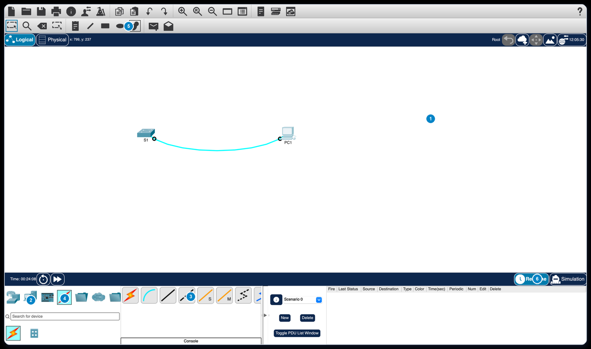
.pkt. Save after every step; the simulator does not save for you.Every Cisco switch and router runs IOS, an operating system with no windows and no mouse. You talk to it through a command-line interface (CLI): you type a command, it answers with text. The first time, there is no network to talk through, so you plug a console cable into the device's Console port and use a terminal program on a PC. In Packet Tracer the PC's Desktop has a Terminal for exactly this; the switch's own CLI tab is a shortcut to the same session.
IOS separates what you can do into modes, and the prompt always tells you which one you are in. User EXEC (Switch>) lets you look. Privileged EXEC (Switch#) lets you see everything and is the door to configuration. Global configuration (Switch(config)#) changes the whole device. Interface configuration (Switch(config-if)#) changes one port; its siblings (config-line)# and (config-vlan)# change one line or one VLAN. You go down one rung at a time and back up with exit, or straight to # with end.
> look, # act.% Invalid input; the mode, not the spelling, is often the problem.end.Today you use the console: a cable, next to the device, no address needed. Once the device has an IP address it can also be managed over the network. Telnet does that in clear text: everything you type, the password included, is readable by anyone on the path. SSH does the same job encrypted. Lab 5 sets both up; until then, the console is your only door, and it is the door that always works.
No previous lab. You need Packet Tracer installed and a Networking Academy login to start it.
| From | Port | Cable | To | Port |
|---|---|---|---|---|
| PC1 | RS 232 | Console (light blue) | S1 | Console |
Lab01.pkt in a folder you will find again. Save after every step of the lab.Follow along in Packet Tracer. Copy commands buttons are there to save time, but typing them yourself is how they stick.
No commands yet. You place two devices, join them with the right cable and open a window onto the switch.
Find the areas you will use in every lab before you place anything.
Workspace in the middle; device categories bottom-left; the models of the chosen category next to them; the tool bars across the top (two rows of icons); the Options menu on top for preferences. Hover over any icon for its name.
One 2960 switch and one PC, named so that every drawing and command in this lab refers to the same device.
Network Devices → Switches → drag a 2960 into the workspace. End Devices → drag a PC. Click the label under each device and rename them S1 and PC1.
Switch inside until Lab 2.Join the PC's serial port to the switch's console port. This is a management cable, not a network cable.
Connections → click the Console cable (light blue). Click PC1 and choose RS 232. Click S1 and choose Console.
Use the PC as a screen and keyboard for the switch, then get your first prompt.
Click PC1 → Desktop → Terminal. Leave the settings (9600 · 8 · None · 1 · None) and click OK. Press Enter once or twice.
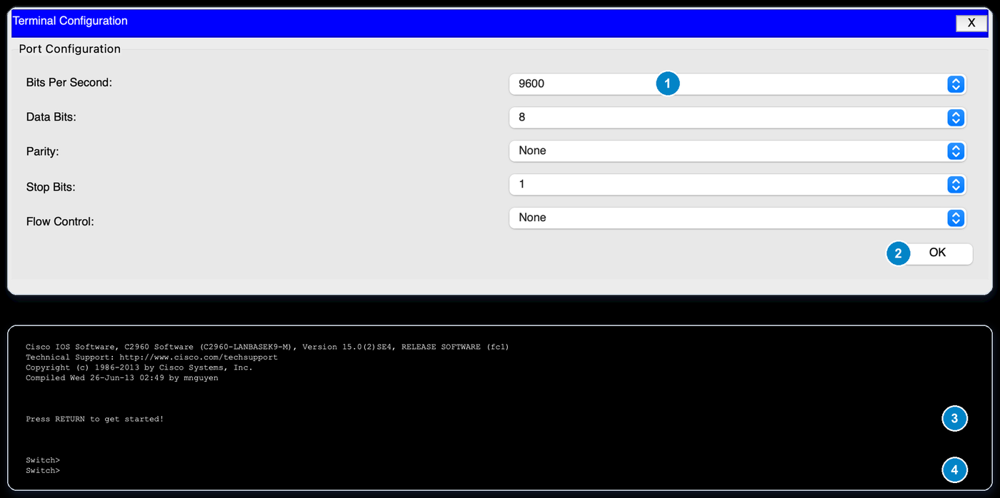
Switch>: user EXEC, the first mode.Switch> prompt in PC1's Terminal window.Everything you built lives in the .pkt file, and nothing is saved for you.
File → Save. Keep Lab01.pkt open; Part B continues in the same Terminal window.
Every command in this course is typed at one of four prompts. Learn to read them, to move between them and to ask the switch for help.
The first rung: from looking to acting.
Switch> is user EXEC: a few show commands and ping, nothing that changes the device.Switch# is privileged EXEC: every show command, and the only door to configuration.disable steps back down. exit at Switch# logs you out instead (you get Press RETURN again).#.Two more rungs down, then the ways back up. disable at the end drops you to Switch> for step B3.
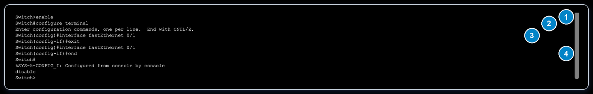
enable: user EXEC to privileged EXEC.configure terminal: into global configuration.interface …: into one port's configuration.end: straight back to privileged EXEC from anywhere.configure terminal opens global configuration: (config)#. Commands here change the whole switch.interface fastEthernet 0/1 opens interface configuration: (config-if)#. Commands here change one port.exit goes up one rung; end (or Ctrl+Z) jumps straight back to # from anywhere.%SYS-5-CONFIG_I is the switch logging that its configuration changed; press Enter to get a clean prompt.> → # → (config)# → (config-if)# and back without looking at the mode map.The switch documents itself. Learn the three ways to ask.
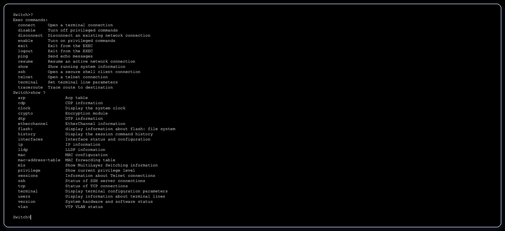
? alone lists every command allowed in the current mode; the list is different at #.t? with no space lists the commands that start with t; show ? with a space lists what may follow show.% Ambiguous command: more than one command matches what you typed. % Incomplete command: the switch needs more words.% Invalid input detected at '^' marker: a typo, or a command that does not exist in this mode; the ^ points at the problem.clock under show ? without reading the list above.Fewer keystrokes, fewer typos, and show commands from inside configuration mode.
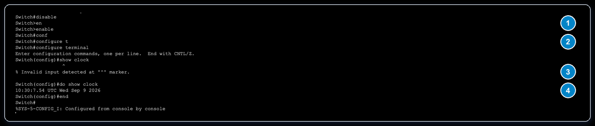
en + Tab became enable.conf + Tab, t + Tab: configure terminal.show clock inside configuration mode: % Invalid input.do show clock from the same prompt works.en, conf t, int f0/1, sh run. This lab prints full words; the Commands section lists the short forms.do runs a privileged-EXEC command (almost always a show) from any configuration mode without leaving it.do show clock shows 2026. Yours shows 1993 until step B5.do show clock works at (config)#, while show clock alone there gives % Invalid input.The first setting you change on the switch, and the last command of the lab.
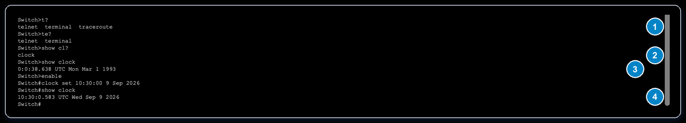
clock can follow show cl.clock set: the date you set.clock set takes hh:mm:ss, then the day, the month name and the year, in that order.* in front of the time marks a clock that nobody authoritative has set; Packet Tracer omits it.show clock prints the date you set. Save the file.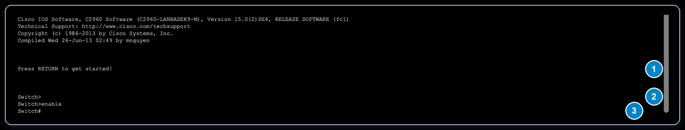
Press RETURN to get started!: the console is open.Switch>: user EXEC, the first prompt.enable the prompt is Switch#.Press RETURN to get started! appears when the Terminal opens; press Enter to get Switch>.Switch> is the first prompt; enable turns it into Switch#.enable: > becomes #.configure terminal: global configuration.interface fastEthernet 0/1: one port.end: straight back to Switch#.enable, configure terminal and interface fastEthernet 0/1 take you down; exit takes you up one rung.end returns to Switch# from any configuration mode, and the switch logs %SYS-5-CONFIG_I.disable takes you back to Switch>.clock can follow show cl.clock set.t? lists three commands; show cl? lists one.show clock before clock set shows 1 March 1993; after it, the date you set.do show clock from (config)# prints the current clock, just like show clock.| What you see | Why | Fix |
|---|---|---|
The Terminal window shows nothing, not even Press RETURN | The cable is on FastEthernet0 instead of RS 232, or it is a copper cable, not a console cable. | Delete the link, Connections → Console, PC1 RS 232 to S1 Console. Press Enter in the Terminal. |
% Invalid input detected at '^' marker | A typo, or a command that does not exist in the current mode. | Look where the ^ points. Check the prompt; use ? to list what is allowed here. |
% Incomplete command | The command needs more words (for example clock set without a time). | Type the command followed by a space and ? to see what is missing. |
% Ambiguous command | The abbreviation matches several commands (s could be show, ssh, …). | Type more letters, or press Tab to see whether one completion exists. |
show clock fails at Switch(config)# | Show commands belong to privileged EXEC. | do show clock, or end first. |
| Packet Tracer asks for a login every time it starts | A free Networking Academy (Skills for All) account is required. | Create the free account once. |
Type commands and watch the prompt change. Every mode has its own commands, and the wrong mode gives the error you will meet in Packet Tracer. This is a small model that knows this lab's commands, not the full IOS.
| Command | What it does |
|---|---|
enableshort: en | User EXEC to privileged EXEC (Switch#). |
disable | Privileged EXEC back to user EXEC (Switch>). |
configure terminalshort: conf t | Privileged EXEC to global configuration ((config)#). |
interface fastEthernet 0/1short: int f0/1 | Global to interface configuration ((config-if)#). |
exit | Up one rung; at Switch# it logs out. |
end | Back to privileged EXEC from any configuration mode (Ctrl+Z does the same). |
? | List the commands allowed in this mode. |
t? | List the commands that start with t (no space). |
show ? | List what may follow show (with a space). |
Tab | Complete the word when only one command matches. |
do show clock | Run a privileged-EXEC command from configuration mode. |
show clockshort: sh clock | Print the device clock. |
clock set 10:30:00 9 Sep 2026 | Set the clock: time, day, month name, year. |
logout | End the console session (same as exit at Switch#). |
Paste a script into a device's CLI tab to catch up, or to check your own work. PCs are addressed by hand.
The finished network, saved from Packet Tracer 9.0.1. Build the lab yourself first, then open this to compare.
Start from: A new Packet Tracer file.
A new switch has no address, so nothing can reach it over a network. Connect a PC so that you can type commands into it, and reach the privileged prompt.
| Device | Connects to | Address | Gateway | VLAN |
|---|---|---|---|---|
| PC1 | S1 console port |
Which cable carries typed characters instead of Ethernet frames? Then look for the PC application that talks over it.
| From | Port | Cable | To | Port |
|---|---|---|---|---|
| PC1 | RS 232 | Console (light blue) | S1 | Console |
Switch> appears first; after enable the prompt is Switch#.Start from: The network from P1.
Move through the IOS modes without typing anything that changes the switch.
| Device | Connects to | Address | Gateway | VLAN |
|---|---|---|---|---|
| PC1 | S1 console port |
exit climbs one rung. Another command jumps straight back to Switch# from any configuration mode.
| From | Port | Cable | To | Port |
|---|---|---|---|---|
| PC1 | RS 232 | Console (light blue) | S1 | Console |
Switch>.Start from: The network from P1.
A new switch thinks it is 1 March 1993. Fix that, and read the clock without leaving a port's settings.
| Device | Connects to | Address | Gateway | VLAN |
|---|---|---|---|---|
| PC1 | S1 console port |
clock set belongs to privileged EXEC. From a configuration mode, one short word lets you run a privileged command.
| From | Port | Cable | To | Port |
|---|---|---|---|---|
| PC1 | RS 232 | Console (light blue) | S1 | Console |
show clock says 1993. The later ones say UTC Sat Nov 14 2026.show clock at Switch(config-if)# gives % Invalid input, which is why do is needed.Start from: A new Packet Tracer file.
Two wiring closets each have a switch and a PC used only for its console. Join the switches, then give each one its own clock.
| Device | Connects to | Address | Gateway | VLAN |
|---|---|---|---|---|
| S1 Fa0/24 | S2 Fa0/24 | |||
| PC1 | S1 console port | |||
| PC2 | S2 console port |
A console cable is one cable per switch, from the PC's RS 232 port. Two switches joined directly need a different copper cable from a PC-to-switch link.
| From | Port | Cable | To | Port |
|---|---|---|---|---|
| S1 | Fa0/24 | Copper cross-over | S2 | Fa0/24 |
| PC1 | RS 232 | Console (light blue) | S1 | Console |
| PC2 | RS 232 | Console (light blue) | S2 | Console |
Start from: A new Packet Tracer file.
Build a small office LAN in a star, and keep a laptop on the switch's console to set its clock.
| Device | Connects to | Address | Gateway | VLAN |
|---|---|---|---|---|
| PC1 | S1 Fa0/1 | 192.168.1.11/24 | ||
| PC2 | S1 Fa0/2 | 192.168.1.12/24 | ||
| PC3 | S1 Fa0/3 | 192.168.1.13/24 | ||
| PC4 | S1 Fa0/4 | 192.168.1.14/24 | ||
| Laptop0 | S1 console port |
The switch needs no command at all to forward frames. Count the cables first: one for each PC, plus the console.
| From | Port | Cable | To | Port |
|---|---|---|---|---|
| PC1 | FastEthernet0 | Copper straight-through | S1 | Fa0/1 |
| PC2 | FastEthernet0 | Copper straight-through | S1 | Fa0/2 |
| PC3 | FastEthernet0 | Copper straight-through | S1 | Fa0/3 |
| PC4 | FastEthernet0 | Copper straight-through | S1 | Fa0/4 |
| Laptop0 | RS 232 | Console (light blue) | S1 | Console |
On each one: Desktop → IP Configuration → Static.
| Device | IP address | Subnet mask | Gateway |
|---|---|---|---|
| PC1 | 192.168.1.11 | 255.255.255.0 | none |
| PC2 | 192.168.1.12 | 255.255.255.0 | none |
| PC3 | 192.168.1.13 | 255.255.255.0 | none |
| PC4 | 192.168.1.14 | 255.255.255.0 | none |
ping 192.168.1.14 replies, TTL=128.ping 192.168.1.13 replies, TTL=128.Start from: A new Packet Tracer file.
Two floors each have a switch and two PCs. Join the floors so every PC reaches every other PC, and read the clock on floor 2's switch from inside its uplink port.
| Device | Connects to | Address | Gateway | VLAN |
|---|---|---|---|---|
| S1 Fa0/24 | S2 Fa0/24 | |||
| PC1 | S1 Fa0/1 | 192.168.1.11/24 | ||
| PC2 | S1 Fa0/2 | 192.168.1.12/24 | ||
| PC3 | S2 Fa0/1 | 192.168.1.13/24 | ||
| PC4 | S2 Fa0/2 | 192.168.1.14/24 | ||
| Laptop0 | S2 console port |
Think about which copper cable joins two switches. Then ask how much configuration S1 really needs.
| From | Port | Cable | To | Port |
|---|---|---|---|---|
| S1 | Fa0/24 | Copper cross-over | S2 | Fa0/24 |
| PC1 | FastEthernet0 | Copper straight-through | S1 | Fa0/1 |
| PC2 | FastEthernet0 | Copper straight-through | S1 | Fa0/2 |
| PC3 | FastEthernet0 | Copper straight-through | S2 | Fa0/1 |
| PC4 | FastEthernet0 | Copper straight-through | S2 | Fa0/2 |
| Laptop0 | RS 232 | Console (light blue) | S2 | Console |
On each one: Desktop → IP Configuration → Static.
| Device | IP address | Subnet mask | Gateway |
|---|---|---|---|
| PC1 | 192.168.1.11 | 255.255.255.0 | none |
| PC2 | 192.168.1.12 | 255.255.255.0 | none |
| PC3 | 192.168.1.13 | 255.255.255.0 | none |
| PC4 | 192.168.1.14 | 255.255.255.0 | none |
ping 192.168.1.13 replies, TTL=128.ping 192.168.1.14 replies, TTL=128.ping 192.168.1.12 replies, TTL=128.Give a device its name, lock its doors, leave a message at the gate and make it all survive a reboot.
A switch forwards frames the moment it is powered on, with no configuration at all. What the basic configuration adds is not forwarding but management: an identity (a hostname, so that the prompt and the logs say which device this is), locked doors (a password on the console line and a secret on privileged mode, so that not everyone with a cable can change things), and persistence (the configuration saved to NVRAM, so that a reboot does not undo the afternoon). A banner adds the legal notice at the door. Everything in this lab is one of these four, apart from two comfort commands, no ip domain-lookup and logging synchronous.
hostname. Doors: line console 0 + password + login, and enable secret.copy running-config startup-config. Notice: banner motd.IOS can store a password three ways. Plain text (enable password, or a line password) is written into the configuration exactly as typed: anyone who reads the file has it. Type 7 (service password-encryption) scrambles plain-text passwords with a trivial, reversible scheme: it hides them from a glance over the shoulder and from nothing else. Type 5, the enable secret, is stored as a one-way hash: the device can check a password but nobody can read it back. When both an enable password and an enable secret exist, only the secret is used.
enable secret for privileged mode, always. enable password exists for old devices and for this demonstration.service password-encryption applies to console, vty and enable passwords, now and in the future.Every command you type changes the running configuration in RAM, immediately, and only there. A reload wipes RAM and the device boots from the startup configuration in NVRAM, which is empty on a new device. copy running-config startup-config (or the old write) copies one onto the other. Packet Tracer keeps the running state inside the .pkt file, so closing and reopening a file proves nothing; a reload or the Power Cycle Devices button does what a power cut does on real hardware, and only what was copied to NVRAM comes back.
show running-config: what the device is doing now. show startup-config: what it will do after a reload.reload on a device, or Power Cycle Devices in Packet Tracer, is the honest test: what was not copied to NVRAM is gone.banner motd (message of the day) is shown to everyone who connects, before the password prompt. The first character after the command is the delimiter; the message ends at the next occurrence of that character, which is why you choose one that is not in your text. Use the banner for the legal notice and the owner's contact, not for a welcome: a welcome message can be read as an invitation.
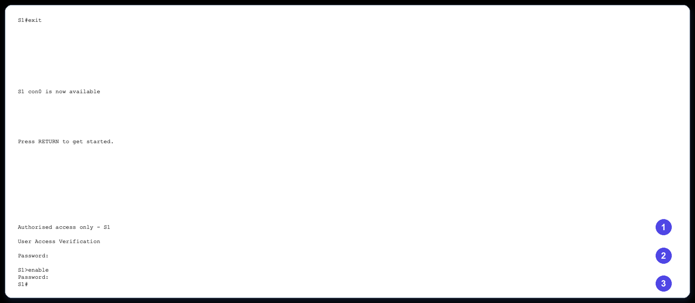
enable.banner motd #Authorised access only - S1#: the # marks both ends.^C characters.User Access Verification, Password:.Lab 1 (the console cable, the four modes, ? and Tab).
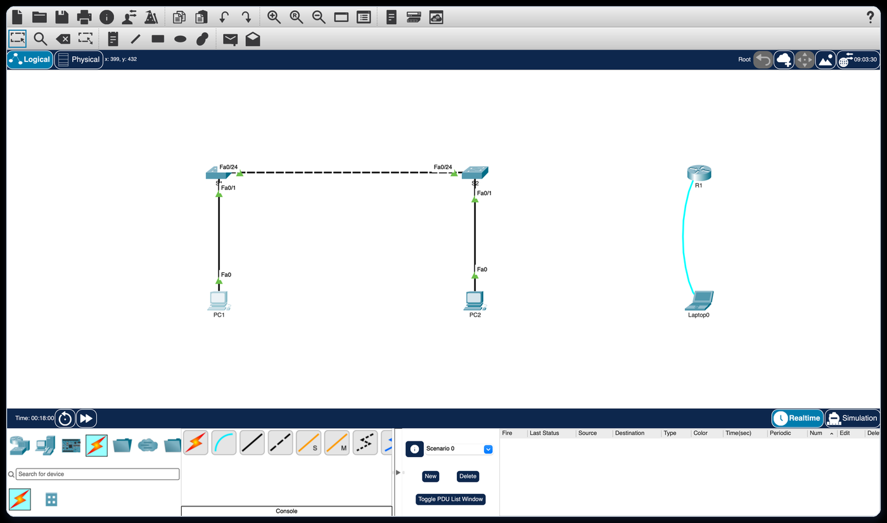
| Device | Interface | IP address | Subnet mask | Note |
|---|---|---|---|---|
| PC1 | FastEthernet0 | 192.168.1.2 | 255.255.255.0 | on S1 Fa0/1 |
| PC2 | FastEthernet0 | 192.168.1.3 | 255.255.255.0 | on S2 Fa0/1 |
| S1, S2, R1 | — | none | — | no addresses in this lab |
| Laptop0 | RS 232 | none | — | console to R1 |
| From | Port | Cable | To | Port |
|---|---|---|---|---|
| PC1 | FastEthernet0 | Copper straight-through | S1 | Fa0/1 |
| PC2 | FastEthernet0 | Copper straight-through | S2 | Fa0/1 |
| S1 | Fa0/24 | Copper cross-over | S2 | Fa0/24 |
| Laptop0 | RS 232 | Console | R1 | Console |
Follow along in Packet Tracer. Copy commands buttons are there to save time, but typing them yourself is how they stick.
Seven small steps on S1. Steps A2 to A7 are then repeated on S2; A1 only looks. By the end both switches have a name, locked doors, a banner and a saved configuration.
A new switch is not empty: read what is already there so that you recognise your own changes later.
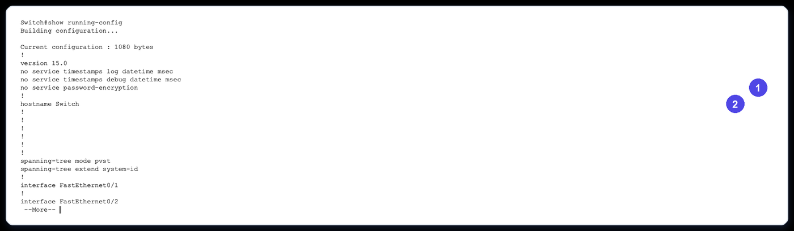
no service password-encryption: nothing is scrambled yet.hostname Switch: the factory name; the prompt shows it.show running-config prints the configuration in use. On a new switch it is mostly the list of ports and empty lines.hostname Switch is the factory name; line con 0 has no password; the vty lines (Telnet, Lab 5) have login but no password, so they refuse everyone.--More--: Space for the next page, Enter for one line, q to stop.hostname Switch and line con 0 in the output.The prompt, the logs and every colleague will call the device by this name. One more global command makes the CLI bearable.
no ip domain-lookup stops the switch from treating a mistyped command as a hostname and pausing for ~30 seconds to DNS-resolve it. Type it once on every device.enable, then the same commands with hostname S2.S1# on one switch and S2# on the other.Anyone with a console cable can reach user EXEC. A line password asks them who they are.
line console 0 is the physical console port; the prompt becomes S1(config-line)#.password sets the password, login switches the check on. You need both: with password alone nothing is asked, and with login alone IOS warns % Login disabled on line 0, until 'password' is set.logging synchronous reprints your half-typed command after a %LINK or %LINEPROTO message interrupts it, so log notices no longer swallow your input.exit ends the session; press Enter and you are asked for the password.exit, then Enter: User Access Verification and Password:. Typing cisco gets you back to S1>; type enable to return to S1# (no secret exists yet, so it asks nothing).Two ways to lock enable; one of them is the right one. Set both once, look at how each is stored, and remember the difference.
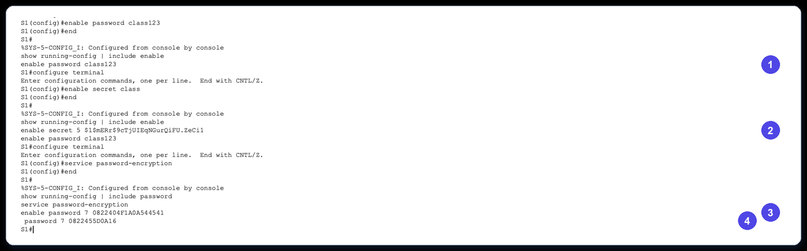
$1$mERr$.service password-encryption: the plain password is now type 7.enable password is stored exactly as typed: anyone who reads the configuration has it.enable secret is stored as a type-5 hash: the switch can check a password but nobody can read it back.class opens privileged mode, class123 does not. Real networks set the secret only.show running-config | include enable filters the output to the lines containing enable.disable, then enable: the switch asks for a password; class works and class123 is refused.One command scrambles every plain-text password in the configuration.
enable secret line does not change: it was already a hash.show running-config is readable any more.The banner is shown to everyone who connects, before the password prompt.
motd = message of the day. It is shown on the console and, later, on Telnet and SSH sessions.banner motd is the delimiter; the message ends at the next one. Choose one that is not in your text.cisco at Password:, then enable, then class: you are back at S1# for step A7.Password:.Copy the running configuration to NVRAM, then prove that the copy is there.
running-config is RAM and vanishes at reload; startup-config is NVRAM and is read at boot.write (wr) is the old short form of the same command.cisco and the prompts read S1> and S2>, not Switch>.Everything from Part A, in one go, on a router reached through its console. Then the PCs prove that the switches forward.
A router has no network address yet; the console cable is the only door.
Laptop0 → Desktop → Terminal → OK. Press Enter.
Press RETURN to get started!. The router may first offer a setup dialog (Continue with configuration dialog? [yes/no]): answer no and configure by hand.Router.Router> in the laptop's Terminal.Name, secret, console password, encryption, banner, save: one pass, no enable password this time.
enable password: the secret is enough. Part A set both only to show the difference.no ip domain-lookup and logging synchronous are the same two quality-of-life commands as on the switch: a router needs them just as much.exit after the console line returns to (config)#; service password-encryption and banner are global commands.password and login.R1# at the prompt, and show running-config shows the name, the secret, the banner and an encrypted console password.Read the whole configuration once, and find each item you set: the name, no ip domain-lookup, the secret, the console password, the encryption service and the banner. (no ip domain-lookup has no number in the figure: find it on its own line.)
login.service password-encryption is near the top: it is a global service.^C characters whatever delimiter you typed.shutdown and have no address: routers start with every port off, switches with every port on.The switches forwarded frames before you touched them; prove it now that they are configured.
PC1: Desktop → IP Configuration → Static → 192.168.1.2 / 255.255.255.0. PC2: 192.168.1.3 / 255.255.255.0. No gateway. Then PC1: Desktop → Command Prompt.
Successful bottom-right.
cisco) opens user EXEC.enable asks for the secret (class) and opens privileged EXEC.User Access Verification.cisco) opens S1>; enable asks for the secret (class) and opens S1#.login.enable secret 5 $1$mERr$…: the hash, identical on every device that uses the same password in Packet Tracer.password 7 … on the console line, service password-encryption at the top.show startup-config prints the same lines: the copy succeeded.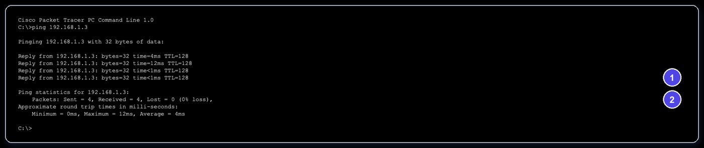
| What you see | Why | Fix |
|---|---|---|
% Login disabled on line 0, until 'password' is set | login was configured on the console line before a password. | line console 0 → password cisco; the check turns on by itself. |
enable says % Bad secrets or % Bad passwords | Typing the wrong one of the two; the secret wins when both exist. | Use the secret (class). If it is lost, in Packet Tracer replace the device; on real hardware, password recovery. |
| The banner is cut short or shows the delimiter | The delimiter character appears inside the message. | Choose a delimiter that is not in the text (#, ^, %) and set the banner again. |
show running-config | include enable → % Invalid input | You are in a configuration mode, where show is not a command, or the character typed was not |. | end first; the filter is | (vertical bar) followed by include. |
| Configuration gone after a reload or Power Cycle Devices | copy running-config startup-config was not run: only NVRAM survives a reboot. | Save on every device (copy running-config startup-config), then File → Save for the .pkt file. |
| A mistyped command hangs for about 30 seconds | The device is trying to resolve the word as a hostname through DNS. | no ip domain-lookup in global configuration; Ctrl+Shift+6 breaks out of a lookup in progress. |
| PC1 cannot ping PC2 | Wrong address or mask, a straight-through cable between the switches, or a port still coming up (amber light). | Check IP Configuration on both PCs; cross-over between switches; wait for green lights. |
Tick a command and read what it adds to the running configuration. Watch how the console password changes with service password-encryption.
| Command | What it does |
|---|---|
show running-configshort: sh run | The configuration in use (RAM). |
show running-config | include enableshort: sh run | i enable | Only the lines that contain the word. |
show startup-configshort: sh start | The saved configuration (NVRAM). |
hostname S1 | Name the device; the prompt changes at once. |
no ip domain-lookup | Stop the device DNS-resolving a mistyped command (no 30-second pauses). |
line console 0short: line con 0 | Configure the console line. |
password cisco | Set the line password. |
login | Ask for the line password on connection. |
logging synchronous | Reprint the command line after a log message (set under a line). |
enable password class123 | Privileged-mode password, stored in clear text (legacy). |
enable secret class | Privileged-mode secret, stored as a hash. Use this one. |
service password-encryption | Scramble plain-text passwords (type 7). |
banner motd #text# | Message shown before login; # is the delimiter. |
copy running-config startup-configshort: wr | Save to NVRAM. |
exit | Up one mode; at S1> or S1# it ends the console connection. |
end | Straight back to privileged EXEC. |
disable | Back to user EXEC. |
ping 192.168.1.3 | From a PC's Command Prompt: four echo requests. |
Paste a script into a device's CLI tab to catch up, or to check your own work. PCs are addressed by hand.
The finished network, saved from Packet Tracer 9.0.1. Build the lab yourself first, then open this to compare.
Start from: A new Packet Tracer file.
A new switch calls itself Switch. Give it a real name that survives a restart, and stop the long pause after a mistyped command.
| Device | Connects to | Address | Gateway | VLAN |
|---|---|---|---|---|
| PC1 | S1 console port |
Everything you type goes to RAM. One command copies it to NVRAM, which is what the switch reads at boot.
| From | Port | Cable | To | Port |
|---|---|---|---|---|
| PC1 | RS 232 | Console (light blue) | S1 | Console |
S1>, not Switch>.Start from: The network from P1, with the switch named S1.
Anyone with a console cable can walk in. Make the console ask for a password.
netlab.| Device | Connects to | Address | Gateway | VLAN |
|---|---|---|---|---|
| PC1 | S1 console port |
Two commands under the console line work as a pair: one stores the password, the other switches the check on.
| From | Port | Cable | To | Port |
|---|---|---|---|---|
| PC1 | RS 232 | Console (light blue) | S1 | Console |
exit, press Enter: User Access Verification and Password: appear. Typing netlab gives S1>.Start from: A new Packet Tracer file.
Give a new switch everything a device needs before it goes to work.
class.cisco.Authorised access only - S1.| Device | Connects to | Address | Gateway | VLAN |
|---|---|---|---|---|
| PC1 | S1 console port |
Set the passwords first, then the service that scrambles plain text. Choose a banner delimiter that is not in the message.
| From | Port | Cable | To | Port |
|---|---|---|---|---|
| PC1 | RS 232 | Console (light blue) | S1 | Console |
show running-config | include password prints service password-encryption and password 7 0822455D0A16.show running-config | include enable prints the enable secret 5 hash, and never the word class.Start from: A new Packet Tracer file.
A router needs the same base configuration, but you have to reach it first. Its network ports stay off.
- R1.| Device | Connects to | Address | Gateway | VLAN |
|---|---|---|---|---|
| Laptop0 | R1 console port |
The commands are the same on a router. Only the factory prompt differs.
| From | Port | Cable | To | Port |
|---|---|---|---|---|
| Laptop0 | RS 232 | Console (light blue) | R1 | Console |
no, then press Enter.show ip interface brief lists every router port as administratively down: unlike a switch, a router starts with its ports off.Start from: A new Packet Tracer file.
Build the two-switch network, configure both switches fully, and prove that all that security did not get in the way of forwarding.
| Device | Connects to | Address | Gateway | VLAN |
|---|---|---|---|---|
| S1 Fa0/24 | S2 Fa0/24 | |||
| PC1 | S1 Fa0/1 | 192.168.1.2/24 | ||
| PC2 | S2 Fa0/1 | 192.168.1.3/24 |
Configure one switch, then repeat with the other name. Each CLI tab works without a console cable, so no laptop is needed.
| From | Port | Cable | To | Port |
|---|---|---|---|---|
| S1 | Fa0/24 | Copper cross-over | S2 | Fa0/24 |
| PC1 | FastEthernet0 | Copper straight-through | S1 | Fa0/1 |
| PC2 | FastEthernet0 | Copper straight-through | S2 | Fa0/1 |
On each one: Desktop → IP Configuration → Static.
| Device | IP address | Subnet mask | Gateway |
|---|---|---|---|
| PC1 | 192.168.1.2 | 255.255.255.0 | none |
| PC2 | 192.168.1.3 | 255.255.255.0 | none |
ping 192.168.1.3 replies, TTL=128.Start from: A new Packet Tracer file.
A small office has a router and a switch, and its legal notice contains a #. Get both devices ready.
class, console password cisco, passwords scrambled, saved.Authorised users only - call #55, complete.| Device | Connects to | Address | Gateway | VLAN |
|---|---|---|---|---|
| Laptop0 | R1 console port | |||
| PC1 | S1 Fa0/1 | 192.168.1.2/24 | ||
| PC2 | S1 Fa0/2 | 192.168.1.3/24 |
The message ends at the next copy of the character that opened it, so # cannot be the delimiter here.
| From | Port | Cable | To | Port |
|---|---|---|---|---|
| Laptop0 | RS 232 | Console (light blue) | R1 | Console |
| PC1 | FastEthernet0 | Copper straight-through | S1 | Fa0/1 |
| PC2 | FastEthernet0 | Copper straight-through | S1 | Fa0/2 |
On each one: Desktop → IP Configuration → Static.
| Device | IP address | Subnet mask | Gateway |
|---|---|---|---|
| PC1 | 192.168.1.2 | 255.255.255.0 | none |
| PC2 | 192.168.1.3 | 255.255.255.0 | none |
no, then press Enter.ping 192.168.1.3 replies, TTL=128.#55. show running-config stores it between ^C characters.Give a switch an address of its own, then split it into separate networks without buying another one.
A switch forwards a frame to the one port where the destination MAC address lives. But some frames have no single destination: an ARP request, a DHCP discover, anything sent to FFFF.FFFF.FFFF is a broadcast, and the switch copies it to every port except the one it came from. All the devices that receive each other's broadcasts form one broadcast domain. On a plain switch the whole switch is one domain: eight PCs on one switch means seven others hear every 'who has this address?' question.
A VLAN (virtual LAN) is a logical group of ports. Ports in VLAN 10 behave as if they were on a separate switch of their own: they share broadcasts only with each other and can exchange frames only with each other. One physical switch can therefore carry several independent networks. Treat each VLAN as a separate subnet: just as two subnets need a router to talk, two VLANs need a router (Lab 4).
Out of the box every port belongs to VLAN 1, the default VLAN, and the switch has no IP address at all: it does not need one to forward frames. To reach the switch itself (to ping it in this lab, to Telnet or SSH into it in Lab 5) you give an address to `interface vlan 1`, a virtual interface (an SVI) that lives inside the switch. It is reachable through any port that is in VLAN 1 and is up.
no shutdown is required: the interface starts administratively down.A port that connects a PC is an access port: every frame arriving on it is placed in the port's VLAN, and only frames of that VLAN are ever sent out of it. switchport mode access fixes the role and switchport access vlan 10 chooses the VLAN. A frame cannot change VLAN on its own, and it cannot reach another switch unless the link between the switches carries its VLAN. That is the job of a trunk, in Lab 4.
vlan 10 and name), then assign ports to it.interface range fastEthernet 0/7-10 configures several ports with one set of commands.show vlan brief is the one command that shows the whole VLAN-to-port map.Lab 1 (moving between the IOS modes) and Lab 2 (hostname, passwords, banner, copy running-config startup-config).
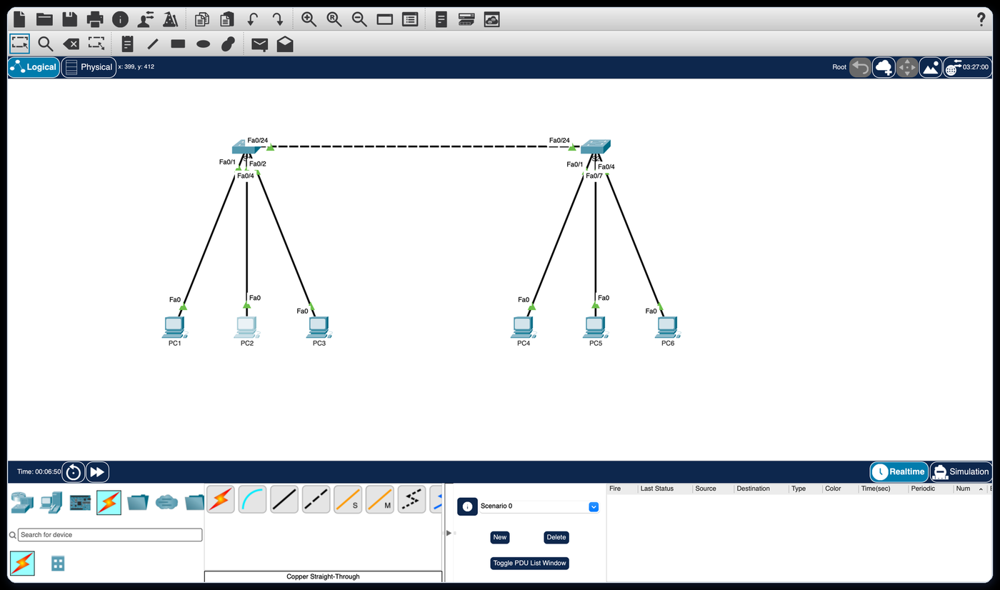
| Device | Interface | IP address | Subnet mask | VLAN |
|---|---|---|---|---|
| S1 | Vlan1 | 192.168.1.253 | 255.255.255.0 | 1 |
| S2 | Vlan1 | 192.168.1.254 | 255.255.255.0 | 1 |
| PC1 | FastEthernet0 | 192.168.1.11 | 255.255.255.0 | 10 |
| PC2 | FastEthernet0 | 192.168.1.12 | 255.255.255.0 | 10 |
| PC3 | FastEthernet0 | 192.168.1.21 | 255.255.255.0 | 20 |
| PC4 | FastEthernet0 | 192.168.1.13 | 255.255.255.0 | 10 |
| PC5 | FastEthernet0 | 192.168.1.22 | 255.255.255.0 | 20 |
| PC6 | FastEthernet0 | 192.168.1.31 | 255.255.255.0 | 30 |
| From | Port | Cable | To | Port |
|---|---|---|---|---|
| PC1 | FastEthernet0 | Copper straight-through | S1 | Fa0/1 |
| PC2 | FastEthernet0 | Copper straight-through | S1 | Fa0/2 |
| PC3 | FastEthernet0 | Copper straight-through | S1 | Fa0/4 |
| PC4 | FastEthernet0 | Copper straight-through | S2 | Fa0/1 |
| PC5 | FastEthernet0 | Copper straight-through | S2 | Fa0/4 |
| PC6 | FastEthernet0 | Copper straight-through | S2 | Fa0/7 |
| S1 | Fa0/24 | Copper cross-over | S2 | Fa0/24 |
| VLAN | Name | Ports on S1 and on S2 | Members here |
|---|---|---|---|
| 10 | IS_Students | Fa0/1 – Fa0/3 | PC1, PC2, PC4 |
| 20 | CS_Students | Fa0/4 – Fa0/6 | PC3, PC5 |
| 30 | IT_Students | Fa0/7 – Fa0/10 | PC6 |
| 1 | default | Fa0/11 – Fa0/24, Gig0/1 – 2 | the S1–S2 link |
Switch> prompt. Everything in Parts A and B happens here.Follow along in Packet Tracer. Copy commands buttons are there to save time, but typing them yourself is how they stick.
Both switches get the Lab 2 basics, then an IP address of their own on VLAN 1. Everything is still in one broadcast domain, so every ping should succeed.
Name each switch, protect privileged mode, and add the two quality-of-life commands. The console password and banner belong to Lab 2; this lab keeps only what VLANs need.
enable secret stores a hash of the password and protects the S1# prompt: the one lock this lab keeps.no ip domain-lookup stops the 30-second pause after a mistyped command; logging synchronous keeps the %LINK messages in step A2 from swallowing your typing.S1#. Repeat on the second switch with hostname S2.Create the management interface, address it and bring it up. The two messages (%LINK and %LINEPROTO) are the switch reporting that the interface came up.
hostname S1 is entered.interface vlan 1: the prompt becomes S1(config-if)#.no shutdown to bring the interface up.interface vlan 1 enters interface configuration for the SVI: the prompt becomes S1(config-if)#.configure terminal to end, with ip address 192.168.1.254 255.255.255.0.Confirm that Vlan1 is up and carries the address, and read what the other lines tell you about your cabling.
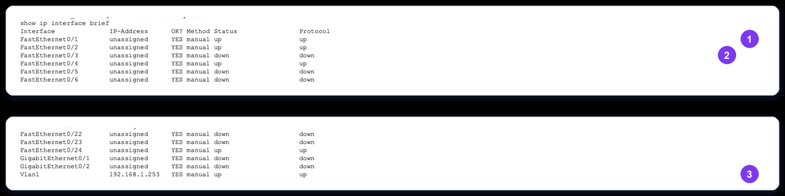
up/up: Fa0/1 has PC1.down/down: nothing is plugged into Fa0/3.--More--. Vlan1 carries the management address; Status and Protocol are both up.Status is the physical/administrative state, Protocol the line protocol; you want up and up.show running-config also shows the address, under interface Vlan1.Vlan1 line as up/up. If yours says down/down, see the troubleshooting table.Copy the running configuration (RAM) to the startup configuration (NVRAM) so that it survives a reload.
running-config is the configuration in RAM, the one you are editing. It vanishes when the switch reloads.startup-config lives in NVRAM and is read at boot. Until you copy, a reload undoes everything.write (wr) is the older short form of the same command; you will still see it in many guides.show startup-config now prints the same hostname and address as show running-config. Save S2 too.Give each PC its address from the table, then prove that every device can reach every other one. They are all in VLAN 1.
On each PC: Desktop → IP Configuration → Static. Type the IP address and the subnet mask from the addressing table; leave the default gateway empty.
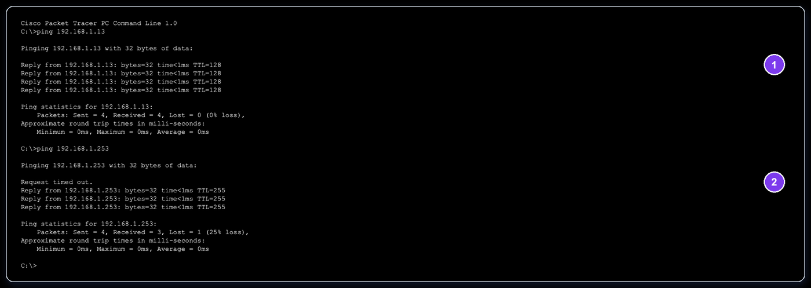
ping 192.168.1.253 and ping 192.168.1.254 from any PC.Three VLANs on each switch, ports assigned from the plan, and then the same pings again. Most of them will now fail, and every failure has a reason.
Before changing anything, see how the switch groups its ports by default.
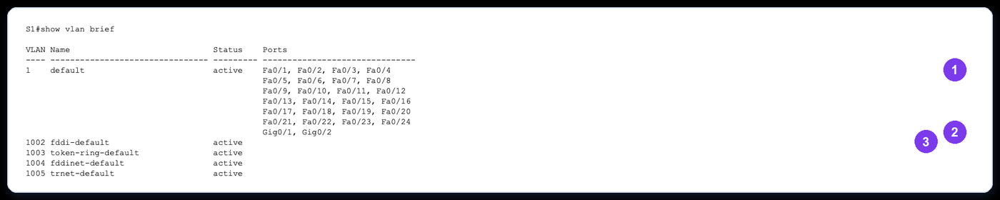
default.Ports column lists access ports only; a trunk port (Lab 4) disappears from this list.active is the VLAN's state. VLANs 1002–1005 are built in for old FDDI and Token Ring networks and cannot be deleted; ignore them.Define VLAN 10, 20 and 30 with names that say who uses them.
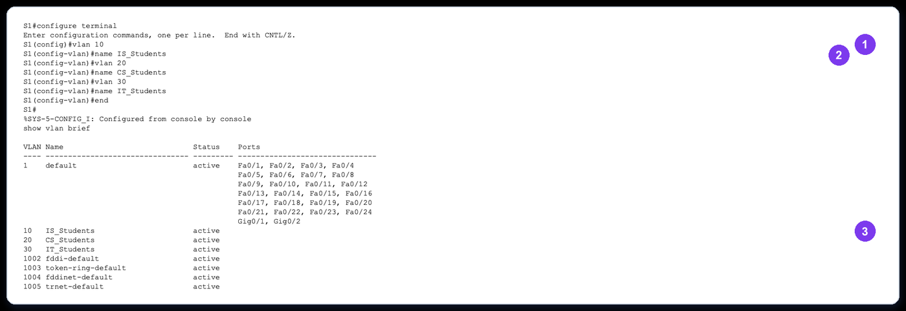
vlan 10 creates the VLAN and enters VLAN configuration mode.name labels it; the next vlan 20 moves straight on.active with an empty Ports column.vlan 10 creates the VLAN if it does not exist and enters S1(config-vlan)#.vlan 20 from inside VLAN 10's mode is fine: you move straight on to VLAN 20._.Ports column is empty.Put Fa0/1, Fa0/2 and Fa0/3 into VLAN 10, then Fa0/4, Fa0/5 and Fa0/6 into VLAN 20.
switchport mode access makes the port a permanent access port: it will never negotiate a trunk.switchport access vlan 10 moves the port into VLAN 10. A PC on that port keeps its link; its frames simply start going into VLAN 10.interface fastEthernet 0/1 straight to interface fastEthernet 0/2 is allowed; no exit is needed.no shutdown is not needed: 2960 ports are up by default.show vlan brief lists Fa0/1–3 under VLAN 10 and Fa0/4–6 under VLAN 20.Ports Fa0/7 to Fa0/10 go into VLAN 30 with one set of commands.
interface range takes the first port, a hyphen and the last port number: 0/7-10, no spaces around the hyphen.S1(config-if-range)#: everything you type applies to all four ports.interface range fastEthernet 0/1-3, fastEthernet 0/7-10.show vlan brief shows Fa0/7, Fa0/8, Fa0/9 and Fa0/10 under VLAN 30.S2 gets the same VLAN numbers and names, so that a VLAN means the same thing on both switches.
Read the final table, then check one port in detail.
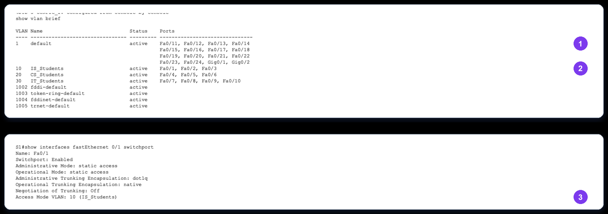
Administrative Mode: static access is the result of switchport mode access.Access Mode VLAN: 10 (IS_Students) is the result of switchport access vlan 10.Repeat the pings from step A5 and explain every result before you read the explanation.
ping 192.168.1.13 on PC1 (to PC4) and ping 192.168.1.253 on PC2 (to S1).Vlan1 shows the configured address with Status up and Protocol up.up/up; the rest are down/down.ping 192.168.1.253 from any PC succeeds while all ports are still in VLAN 1.active with the names from the plan.The same four pings, before and after Part B.
| Ping | Why | Before (A5) | After (B7) |
|---|---|---|---|
| PC1 → PC2 (192.168.1.12) | same VLAN, same switch | ✓ | ✓ |
| PC1 → PC3 (192.168.1.21) | VLAN 10 to VLAN 20 | ✓ | ✗ |
| PC1 → PC4 (192.168.1.13) | same VLAN, but the S1–S2 link is in VLAN 1 | ✓ | ✗ |
| PC2 → S1 (192.168.1.253) | Vlan1 is reachable from VLAN-1 ports only | ✓ | ✗ |
| What you see | Why | Fix |
|---|---|---|
Vlan1 shows administratively down or down/down in show ip interface brief | The SVI is still shut down, or no connected port is in VLAN 1. | interface vlan 1 → no shutdown; make sure at least one connected, up port is in VLAN 1. |
| Two PCs in VLAN 1 cannot ping each other | Wrong IP address or mask on a PC, or the wrong cable (a red link light). | Desktop → IP Configuration; straight-through PC-to-switch, cross-over switch-to-switch. |
% Access VLAN does not exist. Creating vlan 40 | A typo in the VLAN number: IOS created the wrong VLAN and moved the port into it. | no vlan 40 in global configuration, then assign the port again with the right number. |
| A port still appears under VLAN 1 after you configured it | You configured a different interface (Fa0/1 vs Gig0/1), or typed the commands outside (config-if)#. | show running-config interface fastEthernet 0/1, then redo the two switchport commands on the right port. |
| A PC cannot ping the switch address after Part B | Expected: the PC is in VLAN 10, 20 or 30, while the management address is in VLAN 1. | Test from a VLAN-1 port, or (later in the course) route between the VLANs. |
| The configuration is gone after a reload or Power Cycle Devices | copy running-config startup-config was never run: only NVRAM survives a reboot. | Save on every device, then save the Packet Tracer file (File → Save). |
Change the VLAN of any PC. The table shows which pings work with the S1–S2 cable as an access link in VLAN 1 and no router, as in this lab.
| Command | What it does |
|---|---|
enableshort: en | Enter privileged EXEC mode (S1#). |
configure terminalshort: conf t | Enter global configuration mode. |
no ip domain-lookup | Stop the device DNS-resolving a mistyped command. |
logging synchronous | Reprint the command line after a log message (under a line). |
interface vlan 1short: int vlan 1 | Configure the management interface (SVI). |
ip address A.B.C.D MASK | Set an address on the current interface. |
no shutdownshort: no shut | Enable the interface administratively. |
show ip interface briefshort: sh ip int br | One line per interface: address, status, protocol. |
copy running-config startup-config | Save the configuration to NVRAM. |
show running-configshort: sh run | The configuration in use now (RAM). |
show startup-configshort: sh start | The saved configuration (NVRAM). |
show vlan briefshort: sh vlan br | VLAN table: number, name, status, access ports. |
vlan 10 | Create VLAN 10 and enter VLAN configuration mode. |
name IS_Students | Name the VLAN (no spaces). |
interface fastEthernet 0/1short: int f0/1 | Configure one port. |
interface range fastEthernet 0/7-10short: int range f0/7-10 | Configure several ports at once. |
switchport mode access | Make the port a permanent access port. |
switchport access vlan 10 | Put the access port into VLAN 10. |
no switchport access vlan | Return the port to VLAN 1. |
no vlan 40 | Delete a VLAN (its ports go inactive until reassigned). |
show interfaces fastEthernet 0/1 switchportshort: sh int f0/1 sw | Mode and VLAN details of one port. |
do show vlan brief | Run a show command from configuration mode. |
end | Back to privileged EXEC from any configuration mode (or Ctrl+Z). |
Paste a script into a device's CLI tab to catch up, or to check your own work. PCs are addressed by hand.
The finished network, saved from Packet Tracer 9.0.1. Build the lab yourself first, then open this to compare.
Start from: A new Packet Tracer file.
Two departments share one switch. Keep their traffic apart.
Sales holds Fa0/1 and Fa0/2.Support holds Fa0/3 and Fa0/4.| Device | Connects to | Address | Gateway | VLAN |
|---|---|---|---|---|
| PC1 | S1 Fa0/1 | 192.168.1.11/24 | 10 | |
| PC2 | S1 Fa0/2 | 192.168.1.12/24 | 10 | |
| PC3 | S1 Fa0/3 | 192.168.1.21/24 | 20 | |
| PC4 | S1 Fa0/4 | 192.168.1.22/24 | 20 |
Creating a VLAN does not move any port. Each port needs a mode and a VLAN.
| From | Port | Cable | To | Port |
|---|---|---|---|---|
| PC1 | FastEthernet0 | Copper straight-through | S1 | Fa0/1 |
| PC2 | FastEthernet0 | Copper straight-through | S1 | Fa0/2 |
| PC3 | FastEthernet0 | Copper straight-through | S1 | Fa0/3 |
| PC4 | FastEthernet0 | Copper straight-through | S1 | Fa0/4 |
On each one: Desktop → IP Configuration → Static.
| Device | IP address | Subnet mask | Gateway |
|---|---|---|---|
| PC1 | 192.168.1.11 | 255.255.255.0 | none |
| PC2 | 192.168.1.12 | 255.255.255.0 | none |
| PC3 | 192.168.1.21 | 255.255.255.0 | none |
| PC4 | 192.168.1.22 | 255.255.255.0 | none |
ping 192.168.1.12 replies, TTL=128.ping 192.168.1.22 replies, TTL=128.ping 192.168.1.21 times out.show vlan brief lists Fa0/1 and Fa0/2 under VLAN 10, and Fa0/3 and Fa0/4 under VLAN 20.Start from: A new Packet Tracer file.
A new department gets four ports. Configure them all at once, and leave a port outside it.
IT holds Fa0/5 to Fa0/8.| Device | Connects to | Address | Gateway | VLAN |
|---|---|---|---|---|
| PC1 | S1 Fa0/5 | 192.168.1.31/24 | 30 | |
| PC2 | S1 Fa0/8 | 192.168.1.32/24 | 30 | |
| PC3 | S1 Fa0/9 | 192.168.1.33/24 |
One form of the interface command opens several ports together. Watch the prompt change.
| From | Port | Cable | To | Port |
|---|---|---|---|---|
| PC1 | FastEthernet0 | Copper straight-through | S1 | Fa0/5 |
| PC2 | FastEthernet0 | Copper straight-through | S1 | Fa0/8 |
| PC3 | FastEthernet0 | Copper straight-through | S1 | Fa0/9 |
On each one: Desktop → IP Configuration → Static.
| Device | IP address | Subnet mask | Gateway |
|---|---|---|---|
| PC1 | 192.168.1.31 | 255.255.255.0 | none |
| PC2 | 192.168.1.32 | 255.255.255.0 | none |
| PC3 | 192.168.1.33 | 255.255.255.0 | none |
ping 192.168.1.32 replies, TTL=128.ping 192.168.1.33 times out.S1(config-if-range)#.Start from: A new Packet Tracer file.
You want to ping the switch itself, but only from the administrator's PC, not from a staff PC.
Staff.| Device | Connects to | Address | Gateway | VLAN |
|---|---|---|---|---|
| AdminPC | S1 Fa0/11 | 192.168.1.10/24 | ||
| StaffPC | S1 Fa0/1 | 192.168.1.20/24 | 10 |
The address goes on a virtual interface for VLAN 1, and that interface starts shut down.
| From | Port | Cable | To | Port |
|---|---|---|---|---|
| AdminPC | FastEthernet0 | Copper straight-through | S1 | Fa0/11 |
| StaffPC | FastEthernet0 | Copper straight-through | S1 | Fa0/1 |
On each one: Desktop → IP Configuration → Static.
| Device | IP address | Subnet mask | Gateway |
|---|---|---|---|
| AdminPC | 192.168.1.10 | 255.255.255.0 | none |
| StaffPC | 192.168.1.20 | 255.255.255.0 | none |
ping 192.168.1.253 replies.ping 192.168.1.253 times out.show ip interface brief shows Vlan1 192.168.1.253 YES manual up up.Start from: A new Packet Tracer file.
VLAN 10 exists on two switches and must reach across them. VLAN 20 exists on both too, and stays local.
| Device | Connects to | Address | Gateway | VLAN |
|---|---|---|---|---|
| S1 Fa0/24 | S2 Fa0/24 | 10 | ||
| PC1 | S1 Fa0/1 | 192.168.1.11/24 | 10 | |
| PC2 | S1 Fa0/2 | 192.168.1.21/24 | 20 | |
| PC3 | S2 Fa0/1 | 192.168.1.12/24 | 10 | |
| PC4 | S2 Fa0/2 | 192.168.1.22/24 | 20 |
An access port carries exactly one VLAN. Decide which VLAN both ends of the cable belong to.
| From | Port | Cable | To | Port |
|---|---|---|---|---|
| S1 | Fa0/24 | Copper cross-over | S2 | Fa0/24 |
| PC1 | FastEthernet0 | Copper straight-through | S1 | Fa0/1 |
| PC2 | FastEthernet0 | Copper straight-through | S1 | Fa0/2 |
| PC3 | FastEthernet0 | Copper straight-through | S2 | Fa0/1 |
| PC4 | FastEthernet0 | Copper straight-through | S2 | Fa0/2 |
On each one: Desktop → IP Configuration → Static.
| Device | IP address | Subnet mask | Gateway |
|---|---|---|---|
| PC1 | 192.168.1.11 | 255.255.255.0 | none |
| PC2 | 192.168.1.21 | 255.255.255.0 | none |
| PC3 | 192.168.1.12 | 255.255.255.0 | none |
| PC4 | 192.168.1.22 | 255.255.255.0 | none |
ping 192.168.1.12 replies, TTL=128.ping 192.168.1.22 times out.ping 192.168.1.21 times out.Start from: The network from P4.
Now VLAN 20 has to cross as well. Without a trunk, what does that cost you?
| Device | Connects to | Address | Gateway | VLAN |
|---|---|---|---|---|
| S1 Fa0/24 | S2 Fa0/24 | 10 | ||
| S1 Fa0/23 | S2 Fa0/23 | 20 | ||
| PC1 | S1 Fa0/1 | 192.168.1.11/24 | 10 | |
| PC2 | S1 Fa0/2 | 192.168.1.21/24 | 20 | |
| PC3 | S2 Fa0/1 | 192.168.1.12/24 | 10 | |
| PC4 | S2 Fa0/2 | 192.168.1.22/24 | 20 |
One access cable, one VLAN. A third VLAN would need a third cable, which is the problem Lab 4 solves.
| From | Port | Cable | To | Port |
|---|---|---|---|---|
| S1 | Fa0/24 | Copper cross-over | S2 | Fa0/24 |
| S1 | Fa0/23 | Copper cross-over | S2 | Fa0/23 |
| PC1 | FastEthernet0 | Copper straight-through | S1 | Fa0/1 |
| PC2 | FastEthernet0 | Copper straight-through | S1 | Fa0/2 |
| PC3 | FastEthernet0 | Copper straight-through | S2 | Fa0/1 |
| PC4 | FastEthernet0 | Copper straight-through | S2 | Fa0/2 |
On each one: Desktop → IP Configuration → Static.
| Device | IP address | Subnet mask | Gateway |
|---|---|---|---|
| PC1 | 192.168.1.11 | 255.255.255.0 | none |
| PC2 | 192.168.1.21 | 255.255.255.0 | none |
| PC3 | 192.168.1.12 | 255.255.255.0 | none |
| PC4 | 192.168.1.22 | 255.255.255.0 | none |
ping 192.168.1.12 replies, TTL=128.ping 192.168.1.22 replies, TTL=128.ping 192.168.1.22 times out.Start from: A new Packet Tracer file.
Three departments share a switch. Then IT is folded into Support: its ports move, and its VLAN must not be left behind.
Sales Fa0/1-4, VLAN 20 Support Fa0/5-8, VLAN 30 IT Fa0/9-12.| Device | Connects to | Address | Gateway | VLAN |
|---|---|---|---|---|
| PC1 | S1 Fa0/1 | 192.168.1.11/24 | 10 | |
| PC2 | S1 Fa0/5 | 192.168.1.21/24 | 20 | |
| PC3 | S1 Fa0/9 | 192.168.1.22/24 | 20 |
Move the ports first. Deleting a VLAN that still has ports leaves them inactive.
| From | Port | Cable | To | Port |
|---|---|---|---|---|
| PC1 | FastEthernet0 | Copper straight-through | S1 | Fa0/1 |
| PC2 | FastEthernet0 | Copper straight-through | S1 | Fa0/5 |
| PC3 | FastEthernet0 | Copper straight-through | S1 | Fa0/9 |
On each one: Desktop → IP Configuration → Static.
| Device | IP address | Subnet mask | Gateway |
|---|---|---|---|
| PC1 | 192.168.1.11 | 255.255.255.0 | none |
| PC2 | 192.168.1.21 | 255.255.255.0 | none |
| PC3 | 192.168.1.22 | 255.255.255.0 | none |
ping 192.168.1.22 replies, TTL=128.ping 192.168.1.21 times out.show vlan brief has no VLAN 30 row, and VLAN 20 now lists Fa0/5 to Fa0/12.Carry every VLAN over one link, then let a router carry traffic between them.
On an access port the VLAN is implied: whatever arrives on Fa0/1 is VLAN 10 because the port says so. Between two switches that will not do: the single cable must carry VLAN 10, 20 and 30 side by side, so each frame needs to say which VLAN it belongs to. A trunk port inserts a 4-byte 802.1Q tag after the source MAC address, with a 12-bit VLAN ID, before sending; the switch at the other end reads the tag, strips it and delivers the frame into the right VLAN.
An access link belongs to one VLAN: the S1–S2 cable in Lab 3 sat in VLAN 1, so only VLAN 1 could cross it, and PC1 (VLAN 10 on S1) never reached PC4 (VLAN 10 on S2). A trunk carries every VLAN you allow on it, each frame tagged. switchport mode trunk sets the role; switchport trunk allowed vlan 10,20,30 restricts the trunk to the VLANs that need it. Both ends must be trunks: a trunk facing an access port drops every tagged frame.
show interfaces trunk on each switch tells you whether they agree.A router forwards packets between IP networks. It cannot route between two VLANs that share 192.168.1.0/24, because from its point of view there is nothing to route: same network, no hop. So inter-VLAN routing starts with addressing: VLAN 10 becomes 192.168.10.0/24, VLAN 20 becomes 192.168.20.0/24, VLAN 30 becomes 192.168.30.0/24, and each PC's default gateway is the router's address in its own VLAN.
.1 of the PC's own network: 192.168.10.1 for VLAN 10.One physical link from the router to a trunk port on S1 carries all three VLANs. On the router, the physical interface gets no address; instead one sub-interface per VLAN (GigabitEthernet0/0.10, .20, .30) is told its VLAN tag with encapsulation dot1Q 10 and given the gateway address. A packet from VLAN 10 to VLAN 20 goes up the stick tagged 10, is routed inside R1, and comes back down tagged 20.
no shutdown and nothing else.encapsulation dot1Q must come before ip address on each sub-interface.show ip route then shows one connected network per sub-interface, and routing just happens.Lab 3 (VLANs and access ports) and your saved Lab03.pkt file. If you do not have it, download it from the Files section of Lab 3.
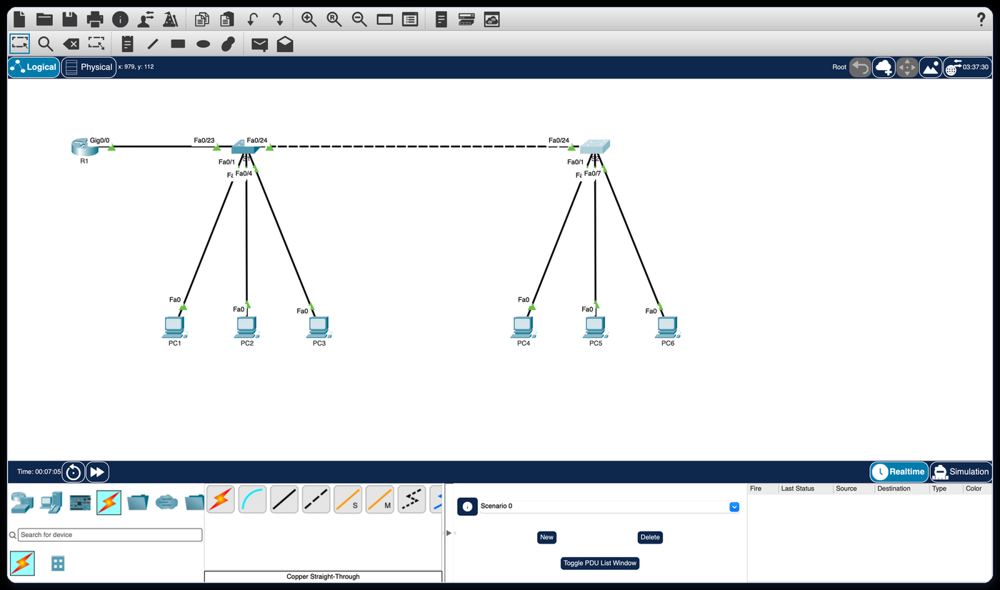
| Device | Interface | IP address | Subnet mask | Gateway | VLAN |
|---|---|---|---|---|---|
| R1 | G0/0.10 | 192.168.10.1 | 255.255.255.0 | — | 10 |
| R1 | G0/0.20 | 192.168.20.1 | 255.255.255.0 | — | 20 |
| R1 | G0/0.30 | 192.168.30.1 | 255.255.255.0 | — | 30 |
| S1 | Vlan1 | 192.168.1.253 | 255.255.255.0 | — | 1 |
| S2 | Vlan1 | 192.168.1.254 | 255.255.255.0 | — | 1 |
| PC1 | Fa0 | 192.168.10.11 | 255.255.255.0 | 192.168.10.1 | 10 |
| PC2 | Fa0 | 192.168.10.12 | 255.255.255.0 | 192.168.10.1 | 10 |
| PC3 | Fa0 | 192.168.20.21 | 255.255.255.0 | 192.168.20.1 | 20 |
| PC4 | Fa0 | 192.168.10.13 | 255.255.255.0 | 192.168.10.1 | 10 |
| PC5 | Fa0 | 192.168.20.22 | 255.255.255.0 | 192.168.20.1 | 20 |
| PC6 | Fa0 | 192.168.30.31 | 255.255.255.0 | 192.168.30.1 | 30 |
| From | Port | Cable | To | Port | Role |
|---|---|---|---|---|---|
| S1 | Fa0/24 | Copper cross-over (from Lab 3) | S2 | Fa0/24 | trunk |
| R1 | G0/0 | Copper straight-through | S1 | Fa0/23 | trunk |
| PC1, PC2, PC3 | Fa0 | Copper straight-through | S1 | Fa0/1, Fa0/2, Fa0/4 | access |
| PC4, PC5, PC6 | Fa0 | Copper straight-through | S2 | Fa0/1, Fa0/4, Fa0/7 | access |
| VLAN | Name | Network (Part B) | Gateway | Members |
|---|---|---|---|---|
| 10 | IS_Students | 192.168.10.0/24 | 192.168.10.1 | PC1, PC2, PC4 |
| 20 | CS_Students | 192.168.20.0/24 | 192.168.20.1 | PC3, PC5 |
| 30 | IT_Students | 192.168.30.0/24 | 192.168.30.1 | PC6 |
| 1 | default (native) | 192.168.1.0/24 | — | S1, S2 management |
Lab03.pkt (or the one in Lab 3's Files section), then File → Save As → Lab04.pkt. Both switches still have their VLANs and access ports.show vlan brief on S1 and S2; ping PC1 → PC2 (works) and PC1 → PC4 (fails). That failure is what Part A fixes.Follow along in Packet Tracer. Copy commands buttons are there to save time, but typing them yourself is how they stick.
One link, three VLANs. Fa0/24 becomes a trunk on both switches, and VLAN 10 on S1 finally reaches VLAN 10 on S2.
Before touching anything, reproduce the failure that Lab 3 ended with.
Request timed out four times from PC1 to PC4.Change the role of the port, then limit the trunk to the VLANs that need it.
switchport mode trunk: the port changes role.switchport mode trunk turns the port into an 802.1Q trunk: frames leave it with a VLAN tag.description Trunk to S2 is a label for people: it means nothing to the switch but shows in show running-config and show interfaces, so the next person knows what the cable is.switchport trunk encapsulation dot1q on a 2960: it speaks only 802.1Q. Guides that show the command were written for other models.switchport trunk allowed vlan 10,20,30: no space after the commas. add and remove change the list later.show interfaces trunk on S1 lists Fa0/24 with mode on, encapsulation 802.1q, status trunking. Now configure the other end: do not leave a trunk to S2's default mode.A trunk facing an access port drops every tagged frame. Configure S2 the same way.
Trunk to S1 for the same reason.Three commands show three views of the same port.
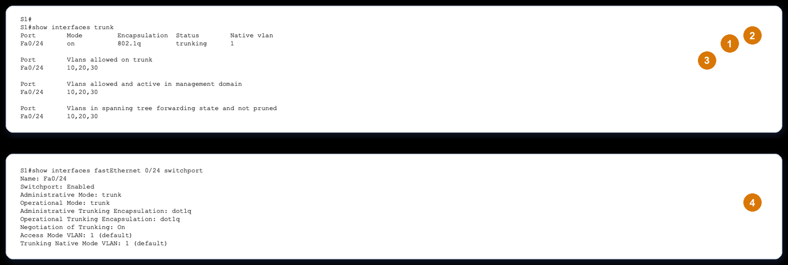
show interfaces trunk: mode on means configured, not negotiated; trunking means the port is doing it.switchport trunk native vlan 99 (an otherwise unused VLAN), so untagged frames never land in a live VLAN. This lab leaves it at 1 for simplicity.show vlan brief: only access ports are listed there.show interfaces trunk and no longer under VLAN 1 in show vlan brief.Same VLAN across switches works now; different VLANs still do not. Predict each result, then run the pings and read the notes.
copy running-config startup-config.New addresses, one network per VLAN, and a router on a stick. At the end every PC reaches every other PC.
A router routes between networks, so each VLAN gets its own. Give every PC its new address and a default gateway.
On each PC: Desktop → IP Configuration → Static. From the addressing table: PC1 192.168.10.11, PC2 192.168.10.12, PC3 192.168.20.21, PC4 192.168.10.13, PC5 192.168.20.22, PC6 192.168.30.31, mask 255.255.255.0, default gateway 192.168.10.1, .20.1 or .30.1 for their VLAN.
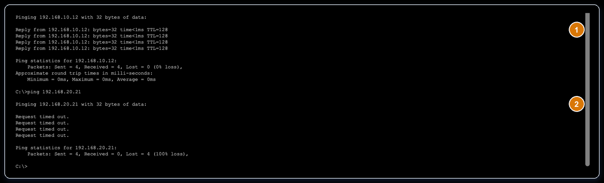
The router hangs off one switch port that carries all three VLANs: a trunk, like the S1–S2 link.
Copper straight-through from R1 GigabitEthernet0/0 to S1 FastEthernet0/23 (done in the build). Then on S1:
description Trunk to R1 labels the port that faces the router.show interfaces trunk will list Fa0/23 next to Fa0/24 once the link is up.The physical interface only comes up; each sub-interface gets its VLAN tag and the gateway address for that VLAN.
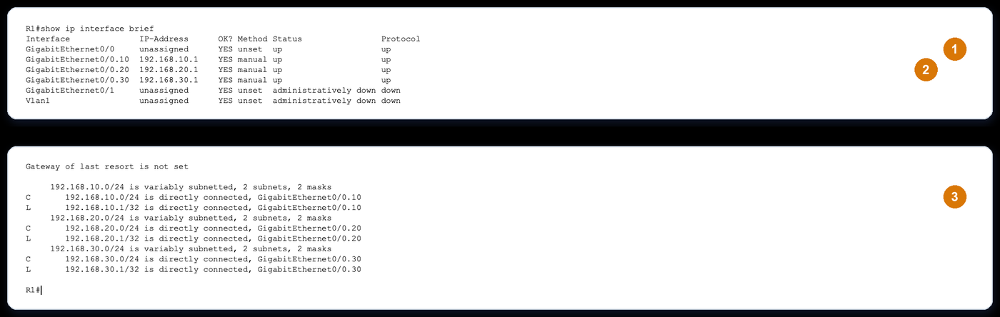
no shutdown on the physical G0/0, and no address on it.interface gigabitEthernet 0/0.10 creates sub-interface .10; the number is only a name, but matching the VLAN keeps you sane.description VLAN 10 - IS_Students on each sub-interface documents which VLAN it serves; like every description it is a label only.encapsulation dot1Q 10 binds the sub-interface to VLAN tag 10. It must come before ip address, or IOS refuses the address.show ip interface brief on R1: G0/0 up/up with no address, the three sub-interfaces up/up with their addresses.Nothing else is needed: a router routes between its connected networks by itself.
C lines: networks the router is directly connected to, one per sub-interface.L lines: the router's own addresses in those networks.C networks: 192.168.10.0, 192.168.20.0 and 192.168.30.0.Every PC reaches every other PC now. The TTL and tracert show who did the work.
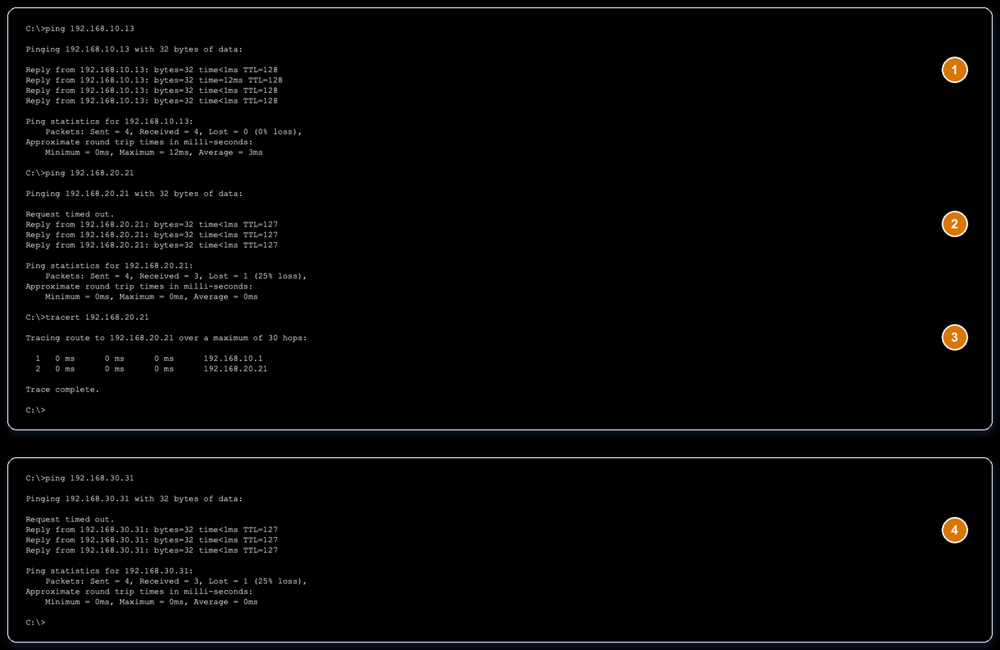
tracert: hop 1 is the gateway 192.168.10.1 (R1), hop 2 the destination.TTL=127: the packet crossed one router (PCs send with 128). In Lab 3 and Part A it was 128: switched, not routed.tracert shows the gateway 192.168.10.1 as hop 1: the packet went up the stick to R1 and came back down in VLAN 20.copy running-config startup-config.show interfaces trunk on S1 lists Fa0/24 (as in the figure, taken at the end of Part A) and, after step B2, Fa0/23 too, both mode on, 802.1q, trunking, native VLAN 1; on S2 only Fa0/24.show vlan brief any more.show ip route shows three C networks and three L addresses.show running-config shows encapsulation dot1Q before ip address on each sub-interface.After Part B, these are the results you should see.
| Ping | Path | TTL | Result |
|---|---|---|---|
| PC1 → PC2 (192.168.10.12) | same VLAN, same switch | 128 | ✓ |
| PC1 → PC4 (192.168.10.13) | same VLAN, across the trunk | 128 | ✓ |
| PC1 → PC3 (192.168.20.21) | VLAN 10 to 20 through R1 | 127 | ✓ |
| PC1 → PC6 (192.168.30.31) | through R1, then across the trunk in VLAN 30 | 127 | ✓ |
| PC1 → S1 (192.168.1.253) | 192.168.1.0/24 has no gateway on R1 | — | ✗ |
tracert lists the gateway as the first hop for every cross-VLAN destination.| What you see | Why | Fix |
|---|---|---|
| PC1 → PC4 still fails after A3 | One end of the S1–S2 link is not a trunk, or VLAN 10 is missing from an allowed list. | Run show interfaces trunk on both switches, then switchport mode trunk or switchport trunk allowed vlan add 10 where it is missing. |
switchport trunk encapsulation dot1q → % Invalid input | The 2960 supports 802.1Q only; the command exists on switches that also support ISL. | Skip it. switchport mode trunk is enough on a 2960. |
% Configuring IP routing on a LAN subinterface is only allowed if that subinterface is already configured as part of an IEEE 802.1Q … vLAN | ip address typed before encapsulation dot1Q on the sub-interface. | Type encapsulation dot1Q 10 first, then the address. |
Sub-interfaces show down/down | The physical GigabitEthernet0/0 is still shut down, or the cable to S1 Fa0/23 is missing, or that switch port is shut down. | interface gigabitEthernet 0/0 → no shutdown; check the cable and S1 Fa0/23. If they are up but pings still fail, check S1 Fa0/23 with show interfaces trunk. |
| PC1 pings its gateway but not PC3 | PC3 has no gateway (or the wrong one): the reply cannot find its way back. | Set 192.168.20.1 as PC3's default gateway; the same for every PC in the table. |
%CDP-4-NATIVE_VLAN_MISMATCH on the console | The two ends of a trunk have different native VLANs. | Leave the native VLAN at 1 on both ends (or set the same one on both with switchport trunk native vlan). |
Choose two PCs and follow the frame link by link: where it is tagged, where the router takes over, and what the TTL becomes. Switch the trunk or the router off to see which pings stop.
| Command | What it does |
|---|---|
switchport mode trunk | Make the port an 802.1Q trunk. |
switchport trunk allowed vlan 10,20,30 | Restrict the trunk to these VLANs (no spaces). |
switchport trunk allowed vlan add 40 | Add a VLAN to the list without retyping it. |
switchport trunk native vlan 99 | Change the VLAN of untagged frames (default 1); both ends alike. |
description Trunk to R1short: desc | Label a port or sub-interface; shows in the config, ignored by the switch. |
show interfaces trunkshort: sh int trunk | Every trunk: mode, encapsulation, status, native and allowed VLANs. |
show interfaces fastEthernet 0/24 switchportshort: sh int f0/24 sw | Administrative and operational mode of one port. |
interface gigabitEthernet 0/0short: int g0/0 | The router's physical interface. |
no shutdownshort: no shut | Enable the interface (routers start with all interfaces off). |
interface gigabitEthernet 0/0.10short: int g0/0.10 | Create or enter sub-interface .10. |
encapsulation dot1Q 10 | Bind the sub-interface to VLAN tag 10 (before the address). |
ip address 192.168.10.1 255.255.255.0 | The gateway address of that VLAN. |
show ip interface briefshort: sh ip int br | Interfaces, sub-interfaces, addresses, status. |
show ip routeshort: sh ip route | The routing table: C connected, L local. |
ping 192.168.20.21 | From a PC: TTL 128 switched, 127 through one router. |
tracert 192.168.20.21 | From a PC: the routers on the way, one line per hop. |
Paste a script into a device's CLI tab to catch up, or to check your own work. PCs are addressed by hand.
The finished network, saved from Packet Tracer 9.0.1. Build the lab yourself first, then open this to compare.
Start from: A new Packet Tracer file.
Two VLANs live on two switches. Carry both over one cable.
Sales 192.168.10.0/24, VLAN 20 Support 192.168.20.0/24, no router yet.| Device | Connects to | Address | Gateway | VLAN |
|---|---|---|---|---|
| S1 Fa0/24 | S2 Fa0/24 | trunk | ||
| PC1 | S1 Fa0/1 | 192.168.10.11/24 | 10 | |
| PC2 | S1 Fa0/2 | 192.168.20.11/24 | 20 | |
| PC3 | S2 Fa0/1 | 192.168.10.12/24 | 10 | |
| PC4 | S2 Fa0/2 | 192.168.20.12/24 | 20 |
A trunk has two ends, and each is configured on its own switch. A 2960 needs only one command to make a port a trunk.
| From | Port | Cable | To | Port |
|---|---|---|---|---|
| S1 | Fa0/24 | Copper cross-over | S2 | Fa0/24 |
| PC1 | FastEthernet0 | Copper straight-through | S1 | Fa0/1 |
| PC2 | FastEthernet0 | Copper straight-through | S1 | Fa0/2 |
| PC3 | FastEthernet0 | Copper straight-through | S2 | Fa0/1 |
| PC4 | FastEthernet0 | Copper straight-through | S2 | Fa0/2 |
On each one: Desktop → IP Configuration → Static.
| Device | IP address | Subnet mask | Gateway |
|---|---|---|---|
| PC1 | 192.168.10.11 | 255.255.255.0 | none |
| PC2 | 192.168.20.11 | 255.255.255.0 | none |
| PC3 | 192.168.10.12 | 255.255.255.0 | none |
| PC4 | 192.168.20.12 | 255.255.255.0 | none |
ping 192.168.10.12 replies, TTL=128.ping 192.168.20.12 replies, TTL=128.ping 192.168.20.11 times out.show interfaces trunk lists Fa0/24 with mode on, encapsulation 802.1q, status trunking.Start from: A new Packet Tracer file.
A trunk should carry only the VLANs that need it. Limit it, then let one more VLAN through without disturbing the others.
| Device | Connects to | Address | Gateway | VLAN |
|---|---|---|---|---|
| S1 Fa0/24 | S2 Fa0/24 | trunk | ||
| PC1 | S1 Fa0/1 | 192.168.10.11/24 | 10 | |
| PC2 | S1 Fa0/7 | 192.168.30.11/24 | 30 | |
| PC3 | S2 Fa0/1 | 192.168.10.12/24 | 10 | |
| PC4 | S2 Fa0/7 | 192.168.30.12/24 | 30 |
One keyword adds to the allowed list. Without it, the command replaces the whole list.
| From | Port | Cable | To | Port |
|---|---|---|---|---|
| S1 | Fa0/24 | Copper cross-over | S2 | Fa0/24 |
| PC1 | FastEthernet0 | Copper straight-through | S1 | Fa0/1 |
| PC2 | FastEthernet0 | Copper straight-through | S1 | Fa0/7 |
| PC3 | FastEthernet0 | Copper straight-through | S2 | Fa0/1 |
| PC4 | FastEthernet0 | Copper straight-through | S2 | Fa0/7 |
On each one: Desktop → IP Configuration → Static.
| Device | IP address | Subnet mask | Gateway |
|---|---|---|---|
| PC1 | 192.168.10.11 | 255.255.255.0 | none |
| PC2 | 192.168.30.11 | 255.255.255.0 | none |
| PC3 | 192.168.10.12 | 255.255.255.0 | none |
| PC4 | 192.168.30.12 | 255.255.255.0 | none |
ping 192.168.30.12: it times out, because VLAN 30 is not on the trunk.ping 192.168.10.12 replies, TTL=128.ping 192.168.30.12 replies, TTL=128.show interfaces trunk now reads 10,20,30 under Vlans allowed on trunk.Start from: A new Packet Tracer file.
Two VLANs on one switch must reach each other through a router with one cable.
.1 address on R1.| Device | Connects to | Address | Gateway | VLAN |
|---|---|---|---|---|
| R1 G0/0 | S1 Fa0/24 | trunk | ||
| PC1 | S1 Fa0/1 | 172.16.10.11/24 | 172.16.10.1 | 10 |
| PC2 | S1 Fa0/2 | 172.16.20.11/24 | 172.16.20.1 | 20 |
One physical port, one sub-interface per VLAN. encapsulation dot1Q comes before ip address, and the physical port needs no shutdown.
| From | Port | Cable | To | Port |
|---|---|---|---|---|
| R1 | G0/0 | Copper straight-through | S1 | Fa0/24 |
| PC1 | FastEthernet0 | Copper straight-through | S1 | Fa0/1 |
| PC2 | FastEthernet0 | Copper straight-through | S1 | Fa0/2 |
On each one: Desktop → IP Configuration → Static.
| Device | IP address | Subnet mask | Gateway |
|---|---|---|---|
| PC1 | 172.16.10.11 | 255.255.255.0 | 172.16.10.1 |
| PC2 | 172.16.20.11 | 255.255.255.0 | 172.16.20.1 |
ping 172.16.10.1 replies.ping 172.16.20.11 replies, TTL=127.Start from: A new Packet Tracer file.
Three VLANs span two switches, and every PC must reach every other PC.
Sales 172.16.10.0/24, 20 Support 172.16.20.0/24, 30 IT 172.16.30.0/24..1 address on R1.| Device | Connects to | Address | Gateway | VLAN |
|---|---|---|---|---|
| R1 G0/0 | S1 Fa0/23 | trunk | ||
| S1 Fa0/24 | S2 Fa0/24 | trunk | ||
| PC1 | S1 Fa0/1 | 172.16.10.11/24 | 172.16.10.1 | 10 |
| PC2 | S1 Fa0/2 | 172.16.20.11/24 | 172.16.20.1 | 20 |
| PC3 | S2 Fa0/1 | 172.16.10.12/24 | 172.16.10.1 | 10 |
| PC4 | S2 Fa0/2 | 172.16.30.12/24 | 172.16.30.1 | 30 |
R1's physical port gets no address. Each sub-interface needs its tag before its address. A VLAN missing from a switch does not cross it.
| From | Port | Cable | To | Port |
|---|---|---|---|---|
| R1 | G0/0 | Copper straight-through | S1 | Fa0/23 |
| S1 | Fa0/24 | Copper cross-over | S2 | Fa0/24 |
| PC1 | FastEthernet0 | Copper straight-through | S1 | Fa0/1 |
| PC2 | FastEthernet0 | Copper straight-through | S1 | Fa0/2 |
| PC3 | FastEthernet0 | Copper straight-through | S2 | Fa0/1 |
| PC4 | FastEthernet0 | Copper straight-through | S2 | Fa0/2 |
On each one: Desktop → IP Configuration → Static.
| Device | IP address | Subnet mask | Gateway |
|---|---|---|---|
| PC1 | 172.16.10.11 | 255.255.255.0 | 172.16.10.1 |
| PC2 | 172.16.20.11 | 255.255.255.0 | 172.16.20.1 |
| PC3 | 172.16.10.12 | 255.255.255.0 | 172.16.10.1 |
| PC4 | 172.16.30.12 | 255.255.255.0 | 172.16.30.1 |
ping 172.16.10.12 replies, TTL=128.ping 172.16.20.11 replies, TTL=127.ping 172.16.30.12 replies, TTL=127.ping 172.16.30.12 replies, TTL=127.show ip route on R1 lists three C networks and three L addresses, one pair per sub-interface.Start from: The finished network from P4.
A new department needs its own VLAN on both switches and its own gateway, without disturbing the other three.
Staff, 172.16.40.0/24, gateway 172.16.40.1.| Device | Connects to | Address | Gateway | VLAN |
|---|---|---|---|---|
| R1 G0/0 | S1 Fa0/23 | trunk | ||
| S1 Fa0/24 | S2 Fa0/24 | trunk | ||
| PC1 | S1 Fa0/1 | 172.16.10.11/24 | 172.16.10.1 | 10 |
| PC2 | S1 Fa0/2 | 172.16.20.11/24 | 172.16.20.1 | 20 |
| PC5 | S1 Fa0/11 | 172.16.40.11/24 | 172.16.40.1 | 40 |
| PC3 | S2 Fa0/1 | 172.16.10.12/24 | 172.16.10.1 | 10 |
| PC4 | S2 Fa0/2 | 172.16.30.12/24 | 172.16.30.1 | 30 |
| PC6 | S2 Fa0/11 | 172.16.40.12/24 | 172.16.40.1 | 40 |
Count the places VLAN 40 has to exist: both switches, three trunk ports and one new sub-interface.
| From | Port | Cable | To | Port |
|---|---|---|---|---|
| R1 | G0/0 | Copper straight-through | S1 | Fa0/23 |
| S1 | Fa0/24 | Copper cross-over | S2 | Fa0/24 |
| PC1 | FastEthernet0 | Copper straight-through | S1 | Fa0/1 |
| PC2 | FastEthernet0 | Copper straight-through | S1 | Fa0/2 |
| PC5 | FastEthernet0 | Copper straight-through | S1 | Fa0/11 |
| PC3 | FastEthernet0 | Copper straight-through | S2 | Fa0/1 |
| PC4 | FastEthernet0 | Copper straight-through | S2 | Fa0/2 |
| PC6 | FastEthernet0 | Copper straight-through | S2 | Fa0/11 |
On each one: Desktop → IP Configuration → Static.
| Device | IP address | Subnet mask | Gateway |
|---|---|---|---|
| PC1 | 172.16.10.11 | 255.255.255.0 | 172.16.10.1 |
| PC2 | 172.16.20.11 | 255.255.255.0 | 172.16.20.1 |
| PC5 | 172.16.40.11 | 255.255.255.0 | 172.16.40.1 |
| PC3 | 172.16.10.12 | 255.255.255.0 | 172.16.10.1 |
| PC4 | 172.16.30.12 | 255.255.255.0 | 172.16.30.1 |
| PC6 | 172.16.40.12 | 255.255.255.0 | 172.16.40.1 |
ping 172.16.40.12 replies, TTL=128.ping 172.16.10.11 replies, TTL=127.ping 172.16.30.12 replies, TTL=127.Start from: The finished network from P4.
The PCs can reach each other, but not the switches' management addresses. Fix that.
| Device | Connects to | Address | Gateway | VLAN |
|---|---|---|---|---|
| R1 G0/0 | S1 Fa0/23 | trunk | ||
| S1 Fa0/24 | S2 Fa0/24 | trunk | ||
| PC1 | S1 Fa0/1 | 172.16.10.11/24 | 172.16.10.1 | 10 |
| PC2 | S1 Fa0/2 | 172.16.20.11/24 | 172.16.20.1 | 20 |
| PC3 | S2 Fa0/1 | 172.16.10.12/24 | 172.16.10.1 | 10 |
| PC4 | S2 Fa0/2 | 172.16.30.12/24 | 172.16.30.1 | 30 |
A switch needs a default gateway to answer a PC in another network. VLAN 1 is not in the allowed lists yet.
| From | Port | Cable | To | Port |
|---|---|---|---|---|
| R1 | G0/0 | Copper straight-through | S1 | Fa0/23 |
| S1 | Fa0/24 | Copper cross-over | S2 | Fa0/24 |
| PC1 | FastEthernet0 | Copper straight-through | S1 | Fa0/1 |
| PC2 | FastEthernet0 | Copper straight-through | S1 | Fa0/2 |
| PC3 | FastEthernet0 | Copper straight-through | S2 | Fa0/1 |
| PC4 | FastEthernet0 | Copper straight-through | S2 | Fa0/2 |
On each one: Desktop → IP Configuration → Static.
| Device | IP address | Subnet mask | Gateway |
|---|---|---|---|
| PC1 | 172.16.10.11 | 255.255.255.0 | 172.16.10.1 |
| PC2 | 172.16.20.11 | 255.255.255.0 | 172.16.20.1 |
| PC3 | 172.16.10.12 | 255.255.255.0 | 172.16.10.1 |
| PC4 | 172.16.30.12 | 255.255.255.0 | 172.16.30.1 |
ping 172.16.1.253 replies.ping 172.16.1.254 replies.ping 172.16.20.11 replies, TTL=127.Reach a device from the console cable, then from across the network, then securely.
The console is a cable: you must be next to the device, but it works when nothing else does and it is how every device gets its first configuration. Once the device has an IP address it can be reached over the network. Telnet does that in clear text: every character, the password included, crosses the network readable. SSH does the same job through an encrypted channel. In this lab you use all three, in that order, and finish by turning Telnet off.
IOS treats every way in as a line. line console 0 is the console port. The vty lines (virtual terminals) are where Telnet and SSH sessions arrive: line vty 0 4 is five of them, line vty 0 15 all sixteen. Each line can ask for its own password with login, or ask for a username and password from the device's user database with login local. Without any of this a vty line refuses everyone, which is why a new device cannot be reached over the network even when it has an address.
line vty 0 4 → password + login: the Telnet way, one shared password.username admin secret … + login local: the SSH way, named users.transport input ssh decides which protocols a line accepts.Telnet sends what you type as you type it: one character per packet, unencrypted, including the line password and the enable secret. Anyone who can capture traffic on the path, in a lab with a hub, on a compromised switch, in Packet Tracer's Simulation mode, reads it off the screen. Telnet is in this lab so that you see this once and never forget why SSH exists.
SSH encrypts the session with keys, so the device needs an RSA key pair before it can accept a connection. The key is named after the hostname and the domain name, so both must exist first. A local user gives you something to log in as. Then the vty lines are told to accept SSH (transport input ssh) and to ask the user database (login local). ip ssh version 2 refuses the weaker version 1.
ssh -l admin 192.168.1.1. From another IOS device: the same command.Lab 2 (basic configuration on switch and router) and Lab 3 (the switch management address).
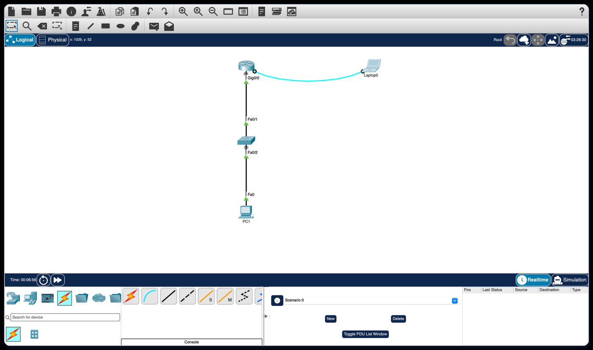
| Device | Interface | IP address | Subnet mask | Gateway |
|---|---|---|---|---|
| R1 | GigabitEthernet0/0 | 192.168.1.1 | 255.255.255.0 | — |
| S1 | Vlan1 | 192.168.1.2 | 255.255.255.0 | — |
| PC1 | FastEthernet0 | 192.168.1.10 | 255.255.255.0 | 192.168.1.1 |
| Laptop0 | RS 232 | none | — | console to R1 |
| From | Port | Cable | To | Port |
|---|---|---|---|---|
| R1 | GigabitEthernet0/0 | Copper straight-through | S1 | Fa0/1 |
| PC1 | FastEthernet0 | Copper straight-through | S1 | Fa0/2 |
| Laptop0 | RS 232 | Console | R1 | Console |
Follow along in Packet Tracer. Copy commands buttons are there to save time, but typing them yourself is how they stick.
Through the console, R1 and S1 get the Lab 2 basics and an address each. From now on the network can reach them.
At this point Laptop0's Terminal is the only way into R1. Name it, lock it, and give it a banner.
hostname R1: the prompt follows.enable secret: the door that Telnet and SSH will need too.no ip domain-lookup (no DNS pause on a typo) and logging synchronous (log messages stop swallowing your typing).enable secret matters later: without it, enable over Telnet or SSH is refused with % No password set.R1# in the laptop's Terminal.One interface, one address, and the router is reachable.
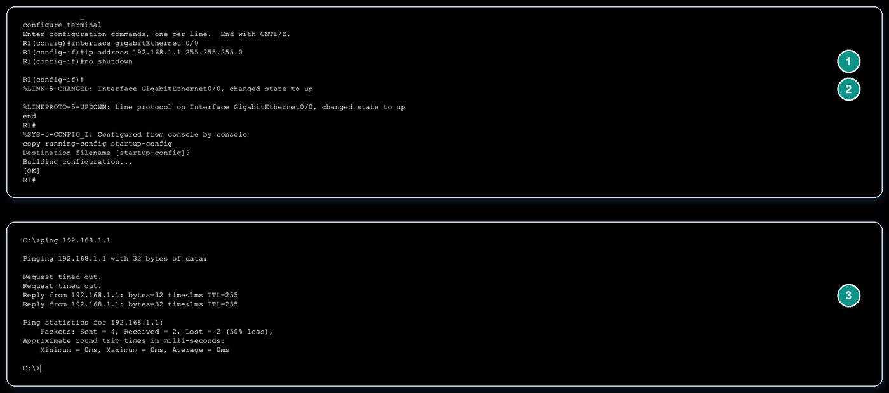
no shutdown: router interfaces start switched off.no shutdown is not optional.The switch gets the same basics through its CLI tab, plus the Lab 3 address on VLAN 1.
interface vlan 1 with an address is what makes the switch reachable over the network (Lab 3).The vty lines open with a shared password. A session from PC1, a look at who is connected, and a look inside the packets.
Five virtual lines, one password, and the login check switched on.
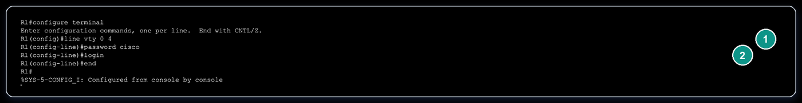
login with a line password: the Telnet door.line vty 0 4 selects five lines at once: up to five simultaneous remote sessions.login without a password refuses every connection with Password required, but none set.Log in over the network, climb to privileged mode, see yourself in show users, leave.
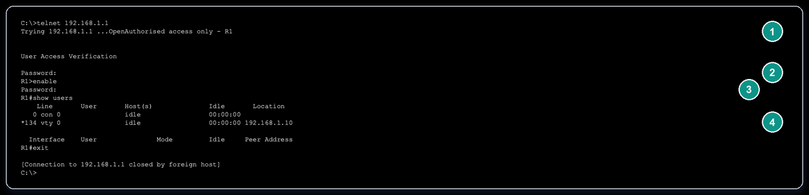
cisco), then the prompt: exactly what the console showed, but from across the network.enable asks for the secret (class): the same door as on the console.show users: the console session on con 0, and your session on vty 0 with your address. The * marks the line you are on.R1# in PC1's Command Prompt, and your address in show users.Switches have sixteen vty lines. Open them and connect.
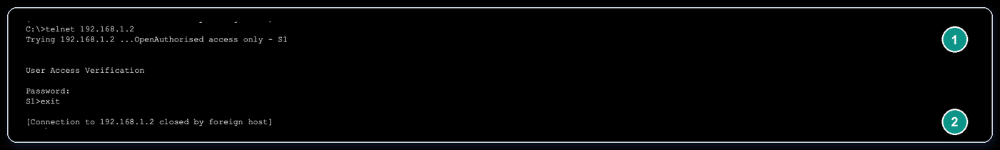
exit closes the session cleanly.line vty 0 15: all sixteen lines of the 2960 in one go; 0 4 would leave 5 to 15 without a password, and they refuse everyone.exit inside the session closes the Telnet connection; the switch is untouched.S1> from PC1 and a clean [Connection … closed by foreign host] on exit.See the password cross the wire. This is the reason for Part C.
Click Simulation (bottom right). Edit Filters → untick all, tick Telnet. In PC1's Command Prompt type telnet 192.168.1.1 again and press Capture / Forward until the banner appears; then type the password one letter at a time, pressing Capture / Forward after each. Click any envelope on the PC1–S1 link → Inbound PDU Details → the last block, TELNET: the letter you typed is there, readable. Return to Realtime when done, then type exit in PC1's Command Prompt so that C:\> comes back.
c, i, s, c, o.enable travels the same way.C:\> is showing again.Four commands prepare the router, three more point the lines at SSH. Then Telnet is closed for good.
The key pair is named after the hostname and the domain, so both come first.
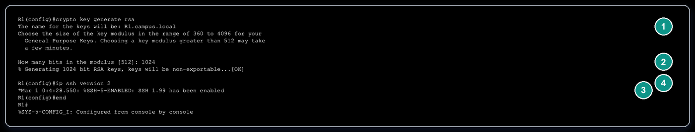
ip domain-name campus.local: any name will do, but it must exist; the key is called R1.campus.local.username admin secret cisco123: a local user with a hashed password. secret, not password.crypto key generate rsa asks for the modulus: type 1024. Version 2 needs at least 768; 512 is the dialog's default and too small.ip ssh version 2 refuses SSH version 1 and its known weaknesses. The console message still says 1.99; show ip ssh confirms version 2.0.show ip ssh prints SSH Enabled - version 2.0.The lines stop accepting Telnet and stop using the shared password.
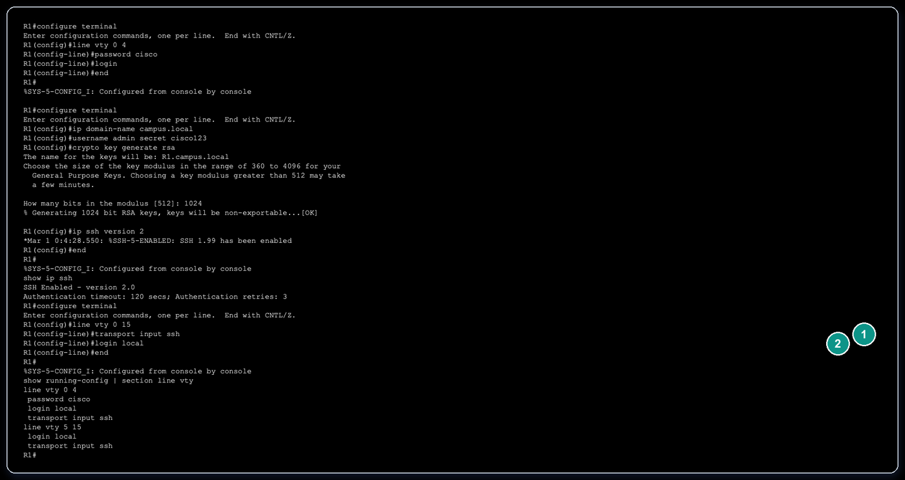
login local: the username database instead of the line password.transport input ssh: SSH only. transport input telnet ssh would allow both; transport input none closes the line.login local replaces login: the line asks for a username and password from the local user database.line vty 0 15 covers all sixteen lines, not only the five you opened for Telnet.show running-config | section line vty shows transport input ssh and login local.The same session as in B2, encrypted, and the proof that the old door is closed.
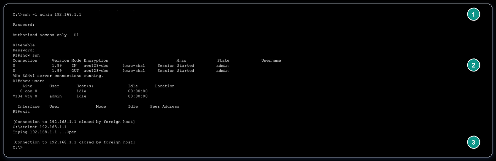
ssh -l admin 192.168.1.1: -l gives the username; the password is the user's (cisco123), not the line password.show ssh lists the session: the cipher (aes128-cbc), the state and the username.R1# over SSH; telnet 192.168.1.1 is closed by foreign host.The same commands on S1, then the same test from PC1.
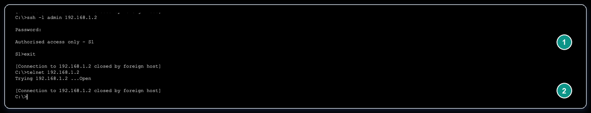
S1.campus.local because the hostname is S1.ssh -l admin 192.168.1.2 works, telnet 192.168.1.2 is closed.S1> over SSH from PC1 (type enable and class to reach S1#); Telnet to the switch refused.Every IOS device is an SSH client too: manage R1 from S1's command line.
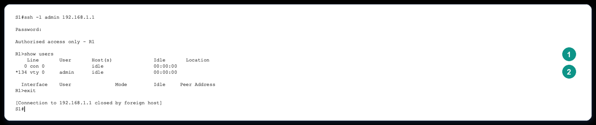
show users, typed at the R1> prompt inside the SSH session from S1.* line on vty 0, with the user admin.admin on R1. At Password: type cisco123, the password of admin on R1.show users on R1 shows your SSH session on a vty line with the user admin.R1> inside S1's CLI, and admin on a vty line in show users. Save everything.Password:, R1>, then enable and R1#, and your address in show users.telnet 192.168.1.1 prints Open and closed by foreign host at once.ssh -l admin asks for the user's password, shows the banner, gives R1>.show ssh lists the session with aes128-cbc and the username.show users on R1 lists admin on a vty line.SSH Enabled - version 2.0.login local and transport input ssh on every vty line.username admin secret 5 … and ip domain-name campus.local in the configuration; the key itself is never shown in show running-config.| What you see | Why | Fix |
|---|---|---|
enable over Telnet or SSH → % No password set | No enable secret on the device. | enable secret class in global configuration (step A1). |
Telnet → Password required, but none set | login on the vty lines without a password. | line vty 0 4 → password cisco. |
crypto key generate rsa → % Please define a domain-name first (or … a hostname other than Router) | The key name needs both. | hostname R1, ip domain-name campus.local, then generate. |
ssh -l admin → % Connection refused or Connection timed out | No keys yet, or the lines do not accept SSH, or keys too short for version 2. | Check show ip ssh; transport input ssh; regenerate with 1024 bits. |
ssh -l admin → % Login invalid | Wrong username or password, or the line uses login instead of login local. | username admin secret cisco123; login local on the vty lines. |
| Cannot reach the switch address at all | Vlan1 down (no shutdown missing) or a wrong subnet. | interface vlan 1 → no shutdown; PC1 and S1 in 192.168.1.0/24. |
Log in over Telnet and over SSH, then read what someone listening on the cable would see. Then close the Telnet door with transport input ssh.
| Command | What it does |
|---|---|
no ip domain-lookup | Stop the device DNS-resolving a mistyped command (the Lab 2 basics). |
logging synchronous | Reprint the command line after a log message (under a line). |
interface gigabitEthernet 0/0short: int g0/0 | The router's LAN interface. |
ip address 192.168.1.1 255.255.255.0 | Address the interface (router) or the SVI (switch). |
no shutdownshort: no shut | Enable it; routers start with interfaces off. |
line vty 0 4 | The first five virtual lines (Telnet/SSH); line vty 0 15 is all sixteen. |
password cisco | Shared line password (Telnet style). |
login | Ask for the line password. |
login local | Ask for a username and password from the local database (SSH style). |
username admin secret cisco123 | Create a local user with a hashed password. |
ip domain-name campus.local | Needed to name the RSA key. |
crypto key generate rsa | Create the key pair; answer 1024 to the modulus question. |
ip ssh version 2 | Accept SSH version 2 only. |
transport input ssh | The line accepts SSH only (telnet ssh: both; none: nothing). |
telnet 192.168.1.1 | From a PC or a device: a Telnet session. |
ssh -l admin 192.168.1.1 | From a PC or a device: an SSH session as user admin. |
show usersshort: sh users | Who is connected, on which line, from where. |
show sshshort: sh ssh | Current SSH sessions: version, cipher, user. |
show ip sshshort: sh ip ssh | Whether SSH is enabled and which version. |
clear line vty 0 | Disconnect the session on that line. |
Paste a script into a device's CLI tab to catch up, or to check your own work. PCs are addressed by hand.
The finished network, saved from Packet Tracer 9.0.1. Build the lab yourself first, then open this to compare.
Start from: A new Packet Tracer file.
Manage a router from a PC across the network instead of from its console.
class, Telnet password cisco on the first five virtual lines.| Device | Connects to | Address | Gateway | VLAN |
|---|---|---|---|---|
| R1 G0/0 | S1 Fa0/1 | |||
| Laptop0 | R1 console port | |||
| PC1 | S1 Fa0/2 | 192.168.1.10/24 | 192.168.1.1 |
enable over Telnet is refused unless a secret exists. A router port starts shut down.
| From | Port | Cable | To | Port |
|---|---|---|---|---|
| R1 | G0/0 | Copper straight-through | S1 | Fa0/1 |
| Laptop0 | RS 232 | Console (light blue) | R1 | Console |
| PC1 | FastEthernet0 | Copper straight-through | S1 | Fa0/2 |
On each one: Desktop → IP Configuration → Static.
| Device | IP address | Subnet mask | Gateway |
|---|---|---|---|
| PC1 | 192.168.1.10 | 255.255.255.0 | 192.168.1.1 |
no, then press Enter.ping 192.168.1.1 replies.telnet 192.168.1.1, password cisco, then enable and class give R1#.Start from: The network from P1.
A switch has no port address to use. Give it a management address and let the PC log in.
class, Telnet password cisco on all sixteen virtual lines.| Device | Connects to | Address | Gateway | VLAN |
|---|---|---|---|---|
| R1 G0/0 | S1 Fa0/1 | |||
| Laptop0 | R1 console port | |||
| PC1 | S1 Fa0/2 | 192.168.1.10/24 | 192.168.1.1 |
The address goes on interface vlan 1. A 2960 has lines vty 0 15.
| From | Port | Cable | To | Port |
|---|---|---|---|---|
| R1 | G0/0 | Copper straight-through | S1 | Fa0/1 |
| Laptop0 | RS 232 | Console (light blue) | R1 | Console |
| PC1 | FastEthernet0 | Copper straight-through | S1 | Fa0/2 |
On each one: Desktop → IP Configuration → Static.
| Device | IP address | Subnet mask | Gateway |
|---|---|---|---|
| PC1 | 192.168.1.10 | 255.255.255.0 | 192.168.1.1 |
ping 192.168.1.2 replies.telnet 192.168.1.2, password cisco, then enable and class give S1#.Start from: A new file with the network from P1.
Telnet sends passwords in clear text. Make R1 ready for SSH instead, and log in with a username.
campus.local, user admin with secret cisco123.| Device | Connects to | Address | Gateway | VLAN |
|---|---|---|---|---|
| R1 G0/0 | S1 Fa0/1 | |||
| Laptop0 | R1 console port | |||
| PC1 | S1 Fa0/2 | 192.168.1.10/24 | 192.168.1.1 |
The key is named after the hostname and the domain, so both must exist first. 1024 is typed at the modulus question.
| From | Port | Cable | To | Port |
|---|---|---|---|---|
| R1 | G0/0 | Copper straight-through | S1 | Fa0/1 |
| Laptop0 | RS 232 | Console (light blue) | R1 | Console |
| PC1 | FastEthernet0 | Copper straight-through | S1 | Fa0/2 |
On each one: Desktop → IP Configuration → Static.
| Device | IP address | Subnet mask | Gateway |
|---|---|---|---|
| PC1 | 192.168.1.10 | 255.255.255.0 | 192.168.1.1 |
no, then press Enter.ping 192.168.1.1 replies.ssh -l admin 192.168.1.1, password cisco123, then enable and class.show ip ssh on R1 prints SSH Enabled - version 2.0.telnet 192.168.1.1 opens and closes at once.Start from: A new file with the network from P1.
Give the switch an address and SSH-only access, with a legal notice at the door.
Authorised access only - S1.| Device | Connects to | Address | Gateway | VLAN |
|---|---|---|---|---|
| R1 G0/0 | S1 Fa0/1 | |||
| Laptop0 | R1 console port | |||
| PC1 | S1 Fa0/2 | 192.168.1.10/24 | 192.168.1.1 |
The chain is the same on a switch. Only the interface and the line numbers differ.
| From | Port | Cable | To | Port |
|---|---|---|---|---|
| R1 | G0/0 | Copper straight-through | S1 | Fa0/1 |
| Laptop0 | RS 232 | Console (light blue) | R1 | Console |
| PC1 | FastEthernet0 | Copper straight-through | S1 | Fa0/2 |
On each one: Desktop → IP Configuration → Static.
| Device | IP address | Subnet mask | Gateway |
|---|---|---|---|
| PC1 | 192.168.1.10 | 255.255.255.0 | 192.168.1.1 |
no, then press Enter.ping 192.168.1.2 replies.ping 192.168.1.1 replies.ssh -l admin 192.168.1.2, password cisco123: the banner appears, then S1>.telnet 192.168.1.2 opens and closes at once.Start from: A new file with the network from P1.
Secure both devices, then manage the switch from inside a session on the router.
| Device | Connects to | Address | Gateway | VLAN |
|---|---|---|---|---|
| R1 G0/0 | S1 Fa0/1 | |||
| Laptop0 | R1 console port | |||
| PC1 | S1 Fa0/2 | 192.168.1.10/24 | 192.168.1.1 |
Each ssh opens a session inside the last one, and each exit closes only the top one.
| From | Port | Cable | To | Port |
|---|---|---|---|---|
| R1 | G0/0 | Copper straight-through | S1 | Fa0/1 |
| Laptop0 | RS 232 | Console (light blue) | R1 | Console |
| PC1 | FastEthernet0 | Copper straight-through | S1 | Fa0/2 |
On each one: Desktop → IP Configuration → Static.
| Device | IP address | Subnet mask | Gateway |
|---|---|---|---|
| PC1 | 192.168.1.10 | 255.255.255.0 | 192.168.1.1 |
no, then press Enter.ssh -l admin 192.168.1.1, password cisco123: you are at R1>.ssh -l admin 192.168.1.2, password cisco123: you are at S1>.exit returns you to R1>; a second exit returns you to C:\>.ping 192.168.1.1 replies.ping 192.168.1.2 replies.show users lists your session on a vty line with the user admin.Start from: A new file with the network from P1.
Limit a switch to five remote sessions, all SSH, and keep the other lines shut whatever happens later.
| Device | Connects to | Address | Gateway | VLAN |
|---|---|---|---|---|
| R1 G0/0 | S1 Fa0/1 | |||
| Laptop0 | R1 console port | |||
| PC1 | S1 Fa0/2 | 192.168.1.10/24 | 192.168.1.1 |
You need two line vty blocks. One value of transport input closes a line.
| From | Port | Cable | To | Port |
|---|---|---|---|---|
| R1 | G0/0 | Copper straight-through | S1 | Fa0/1 |
| Laptop0 | RS 232 | Console (light blue) | R1 | Console |
| PC1 | FastEthernet0 | Copper straight-through | S1 | Fa0/2 |
On each one: Desktop → IP Configuration → Static.
| Device | IP address | Subnet mask | Gateway |
|---|---|---|---|
| PC1 | 192.168.1.10 | 255.255.255.0 | 192.168.1.1 |
no, then press Enter.ping 192.168.1.2 replies.show running-config | section line vty shows the two blocks.Teach a port which MAC addresses it trusts and what to do about strangers.
A switch learns MAC addresses from the frames it receives: whoever sends a frame on Fa0/1 is recorded as living on Fa0/1, and from then on frames for that address are delivered there. Nothing checks who that is. Unplug a PC, plug in a laptop, and the switch serves the laptop just as happily, learning its address in the same table. On a real network that laptop can sniff, spoof addresses, or flood the table until the switch forwards everything everywhere.
show mac address-table: the list of who was seen where.Port security gives an access port a list of allowed MAC addresses and a size limit. Addresses can be typed by hand (static), learned from traffic and kept in the configuration (sticky), or learned and forgotten at reload (dynamic). switchport port-security maximum 1 with mac-address sticky means: the first device seen on this port is the only device this port will ever serve, and its address is written into the running configuration so that you can save it.
switchport port-security turns it on; the port must be a static access port first.copy running-config startup-config.When a frame arrives from an address that is not on the list, or the list is full, the port acts according to its violation mode. Protect drops the frames silently. Restrict drops them, logs a message and counts the violation. Shutdown, the default, puts the port into the err-disabled state: no traffic at all, for anyone, until an administrator brings it back.
A port in err-disabled state is down in every respect: its light is red, show interfaces says down, line protocol is down (err-disabled), and even the legitimate PC gets nothing. Recovery is deliberate: remove the cause (the intruder), then shutdown and no shutdown on the interface. Real switches can also recover automatically after a timer (errdisable recovery); the manual way is the one to know.
shutdown, no shutdown → Secure-up.show port-security interface shows the state, the violation count and the last address seen.no shutdown, or the port shuts again at once.Lab 3 (access ports, interface range) and Lab 2 (basic configuration).
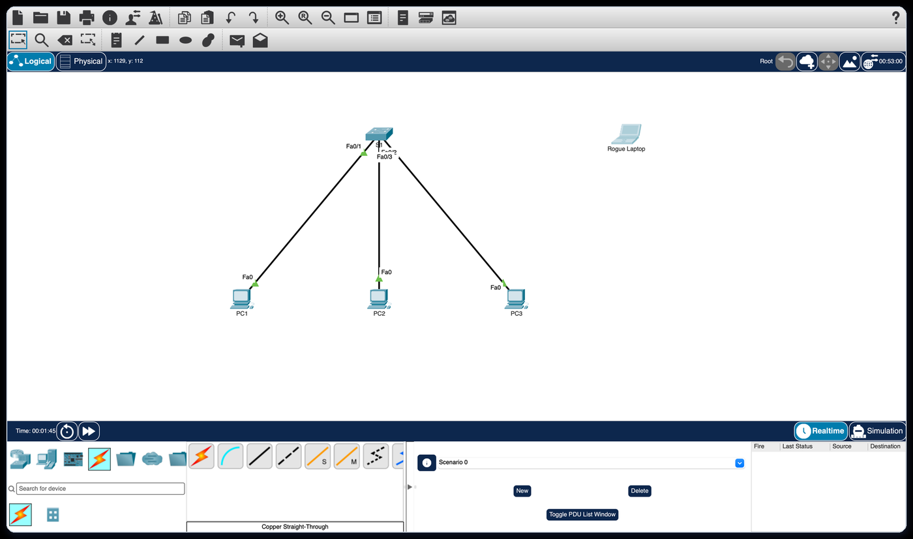
| Device | Interface | IP address | Subnet mask | MAC address (yours differ) |
|---|---|---|---|---|
| S1 | Vlan1 | 10.10.10.2 | 255.255.255.0 | — |
| PC1 | FastEthernet0 | 10.10.10.11 | 255.255.255.0 | 0001.9641.1C3A |
| PC2 | FastEthernet0 | 10.10.10.12 | 255.255.255.0 | 0060.2F84.5B22 |
| PC3 | FastEthernet0 | 10.10.10.13 | 255.255.255.0 | 00D0.BC3E.7A91 |
| Rogue Laptop | FastEthernet0 | 10.10.10.99 | 255.255.255.0 | 00E0.F7C2.1D05 |
| From | Port | Cable | To | Port |
|---|---|---|---|---|
| PC1 | FastEthernet0 | Copper straight-through | S1 | Fa0/1 |
| PC2 | FastEthernet0 | Copper straight-through | S1 | Fa0/2 |
| PC3 | FastEthernet0 | Copper straight-through | S1 | Fa0/3 |
| Rogue Laptop | FastEthernet0 | none until Part B | S1 | Fa0/1 (takes PC1's place) |
Follow along in Packet Tracer. Copy commands buttons are there to save time, but typing them yourself is how they stick.
First see what the switch learns on its own, then tell three ports whom to trust, and check that they remember.
The Lab 2 basics, a management address, and a ping from every PC so that the switch has seen everybody.
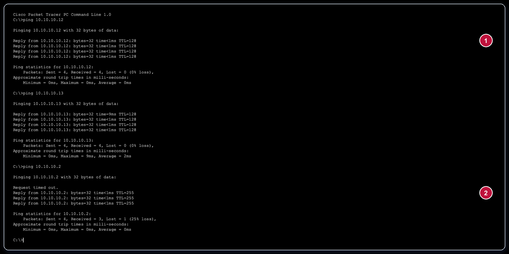
no ip domain-lookup, enable secret, logging synchronous and the management address. The console password and banner (Lab 2) are left out to keep the focus on port security.The MAC table is the switch's memory of who was seen where. Compare it with the addresses you wrote down.
DYNAMIC entry per PC, on the port where its frame arrived.Static access ports, one sticky address each, shutdown on violation.
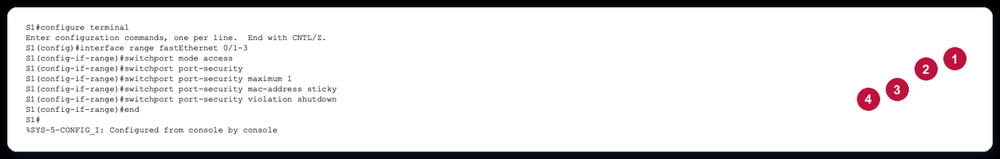
switchport mode access first: port security refuses a dynamic (DTP) port with Command rejected: … is a dynamic port.switchport port-security enables the feature with its defaults: maximum 1, violation shutdown. maximum 1 and violation shutdown repeat those defaults to make them explicit; mac-address sticky is not a default.mac-address sticky: learn the first address seen and write it into the running configuration.spanning-tree portfast and spanning-tree bpduguard enable: portfast skips the listening/learning delay for a device that will never be a switch, and BPDU guard err-disables the port if a switch is ever plugged in. STP is outside this series, so this stays a note, not a step.Three views: all secured ports, one port in detail, and the secure address table.
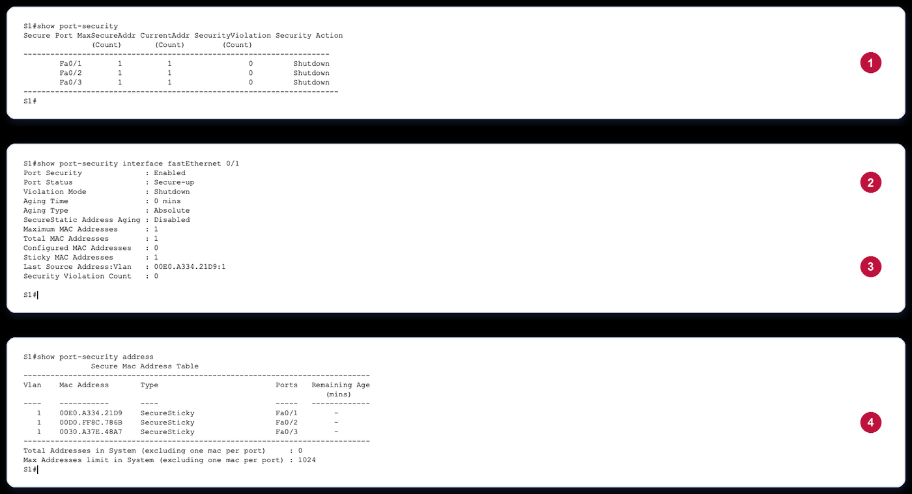
CurrentAddr 1 on each port: the sticky address has been learned. SecurityViolation 0: nobody has been refused yet.Port Status: Secure-up: the port is protected and working. Last Source Address is your PC's MAC.SecureSticky in the address table: learned, and now part of the configuration.Sticky addresses are written into the running configuration; a reload forgets them unless you save. Packet Tracer's IOS does not take show running-config interface or | include, so read the whole running configuration and find the interface.
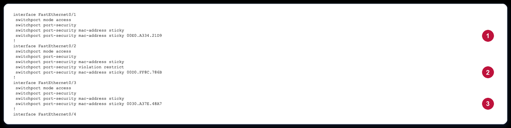
violation restrict here because the figure was taken after step B4; yours will not have it yet.interface FastEthernet0/1, the address the switch learned is now a configuration line: switchport port-security mac-address sticky followed by the MAC.show running-config shows a mac-address sticky line under Fa0/1, Fa0/2 and Fa0/3, and copy running-config startup-config writes them to NVRAM.An unknown device takes a protected port. Watch the switch react, read what it says, and bring the port back the right way.
Move PC1's cable to the Rogue Laptop and let it talk.
Delete the cable between PC1 and S1 Fa0/1 (select it, press Delete). Connect a copper straight-through cable from the Rogue Laptop's FastEthernet0 to S1 Fa0/1. On the laptop: Desktop → Command Prompt.
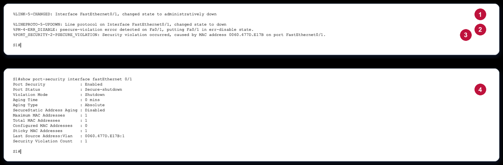
%PORT_SECURITY-2-PSECURE_VIOLATION names the offending MAC address; %PM-4-ERR_DISABLE says what the switch did about it.%PM-4-ERR_DISABLE line says.Request timed out, a red light on Fa0/1, and the two violation messages on S1's console.Everything the switch knows about the violation is in three show commands.
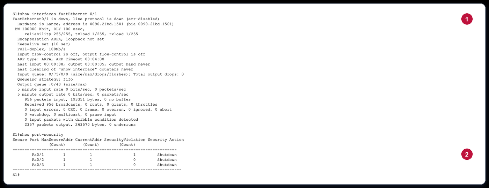
Port Status: Secure-shutdown and Security Violation Count: 1.Last Source Address is the laptop's MAC: the evidence of who tried.(err-disabled) in show interfaces is the state a no shutdown alone will not clear.(err-disabled) on the interface.Remove the cause first, then bounce the port.
Delete the laptop's cable and reconnect PC1 to Fa0/1 with a straight-through cable.
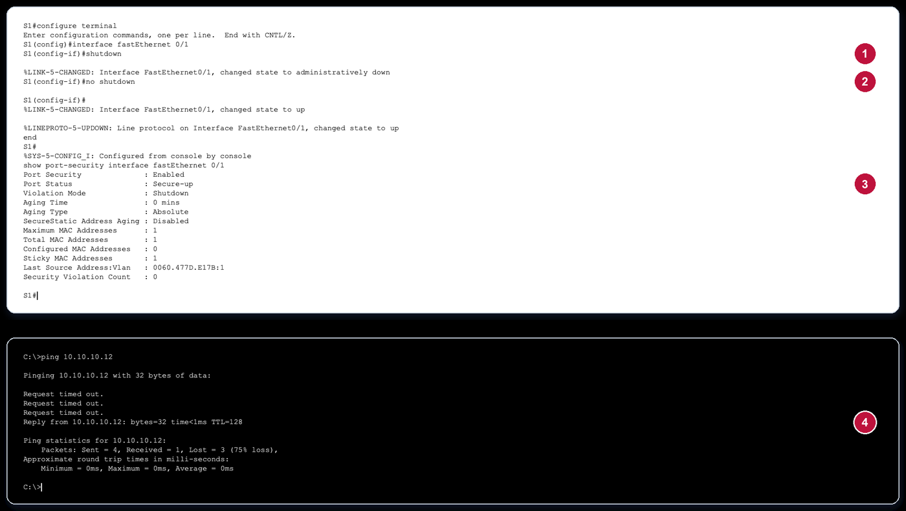
shutdown first: this is what clears err-disabled.no shutdown brings the port back.shutdown then no shutdown: the pair is what clears err-disabled. no shutdown alone does nothing on a port that is not administratively down.The same intrusion on a port that logs but stays up.
Delete PC2's cable, connect the Rogue Laptop to Fa0/2, and on the laptop run ping 10.10.10.11; then delete that cable and reconnect PC2.
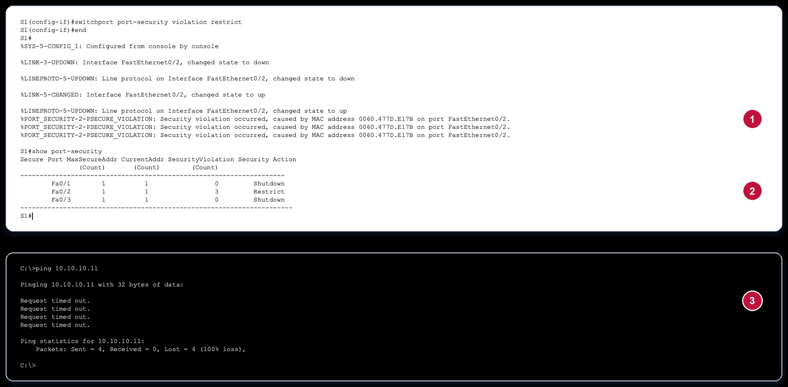
show port-security, and the violation never takes the port down (the link flaps only while you swap cables). Put PC2 back and save with copy running-config startup-config.show port-security: Fa0/1 to Fa0/3, maximum 1, current 1, action Shutdown (Fa0/2 Restrict after B4).show port-security interface fastEthernet 0/1: Secure-up, sticky 1, the PC's MAC as last source.show running-config: a mac-address sticky <MAC> line under each secured port, and the same in show startup-config.Secure-shutdown, Security Violation Count 1, (err-disabled) on the interface.shutdown / no shutdown with PC1 back: Secure-up and a working ping.| What you see | Why | Fix |
|---|---|---|
Command rejected: FastEthernet0/1 is a dynamic port. | Port security needs a static access (or static trunk) port; the port was still in dynamic DTP mode. | switchport mode access first, then switchport port-security. |
Sticky MAC Addresses : 0 after enabling | No frame has arrived on the port since; sticky learns from traffic. | Ping from the PC on that port, then look again. |
| PC1 is back but the port stays down | err-disabled is not cleared by reconnecting. | interface fastEthernet 0/1 → shutdown → no shutdown. |
| The port shuts down again right after recovery | The intruder (or a second device) is still on the port, or the wrong PC was reconnected. | Check the cable; show port-security interface shows the last address seen. |
| The sticky addresses are gone after a reload or Power Cycle Devices | They lived in the running configuration and were never saved to NVRAM. | copy running-config startup-config, then File → Save. |
| Two devices are legitimate on one port (a PC behind an IP phone) | Maximum 1 sees the second address as a violation. | switchport port-security maximum 2 on that port. |
Send frames from known and unknown devices and compare the three violation modes.
| Command | What it does |
|---|---|
no ip domain-lookup | Stop the device DNS-resolving a mistyped command (the Lab 2 basics). |
logging synchronous | Reprint the command line after a log message (under a line). |
show mac address-tableshort: sh mac address-table | What the switch has learned: address, type, port. |
switchport mode access | Required before port security on the port. |
switchport port-security | Enable port security (defaults: maximum 1, shutdown). |
switchport port-security maximum 2 | Allowed addresses on the port (1 to 132 on the 2960 here). |
switchport port-security mac-address sticky | Learn addresses and keep them in the configuration. |
switchport port-security mac-address 0001.9641.1C3A | A static allowed address. |
switchport port-security violation shutdown | Err-disable the port on violation (default). |
switchport port-security violation restrict | Drop, log and count. |
switchport port-security violation protect | Drop silently. |
show port-securityshort: sh port-sec | All secured ports: max, current, violations, action. |
show port-security interface fastEthernet 0/1short: sh port-sec int f0/1 | One port: status, mode, counts, last address. |
show port-security addressshort: sh port-sec address | The secure address table. |
show interfaces fastEthernet 0/1short: sh int f0/1 | (err-disabled) in the first line after a shutdown violation. |
shutdown / no shutdown | Clear err-disabled after removing the cause. |
errdisable recovery cause psecure-violation | Automatic recovery after a timer (real switches; optional). |
copy running-config startup-configshort: wr | Save the sticky addresses. |
Paste a script into a device's CLI tab to catch up, or to check your own work. PCs are addressed by hand.
The finished network, saved from Packet Tracer 9.0.1. Build the lab yourself first, then open this to compare.
Start from: A new Packet Tracer file.
Only PC1 may ever use Fa0/1. Anyone else who plugs in there should shut the port.
| Device | Connects to | Address | Gateway | VLAN |
|---|---|---|---|---|
| PC1 | S1 Fa0/1 | 10.10.10.11/24 | ||
| PC2 | S1 Fa0/2 | 10.10.10.12/24 | ||
| Rogue | joins later on S1 Fa0/1 | 10.10.10.99/24 |
Port security refuses a port left in its default dynamic mode. Then send a frame, because sticky learns from traffic.
| From | Port | Cable | To | Port |
|---|---|---|---|---|
| PC1 | FastEthernet0 | Copper straight-through | S1 | Fa0/1 |
| PC2 | FastEthernet0 | Copper straight-through | S1 | Fa0/2 |
On each one: Desktop → IP Configuration → Static.
| Device | IP address | Subnet mask | Gateway |
|---|---|---|---|
| PC1 | 10.10.10.11 | 255.255.255.0 | none |
| PC2 | 10.10.10.12 | 255.255.255.0 | none |
| Rogue | 10.10.10.99 | 255.255.255.0 | none |
ping 10.10.10.12 so that the switch learns PC1's address.ping 10.10.10.12 replies, TTL=128.show port-security interface fastEthernet 0/1 reads Secure-up, Sticky MAC Addresses : 1.Secure-shutdown and the count 1.Start from: A new Packet Tracer file.
Three PCs each own a port. Configure all three together.
| Device | Connects to | Address | Gateway | VLAN |
|---|---|---|---|---|
| PC1 | S1 Fa0/1 | 10.10.10.11/24 | ||
| PC2 | S1 Fa0/2 | 10.10.10.12/24 | ||
| PC3 | S1 Fa0/3 | 10.10.10.13/24 |
A range saves typing. Saving too early stores no addresses, and the first device after a reload would take the port.
| From | Port | Cable | To | Port |
|---|---|---|---|---|
| PC1 | FastEthernet0 | Copper straight-through | S1 | Fa0/1 |
| PC2 | FastEthernet0 | Copper straight-through | S1 | Fa0/2 |
| PC3 | FastEthernet0 | Copper straight-through | S1 | Fa0/3 |
On each one: Desktop → IP Configuration → Static.
| Device | IP address | Subnet mask | Gateway |
|---|---|---|---|
| PC1 | 10.10.10.11 | 255.255.255.0 | none |
| PC2 | 10.10.10.12 | 255.255.255.0 | none |
| PC3 | 10.10.10.13 | 255.255.255.0 | none |
ping 10.10.10.12, then ping 10.10.10.13: PC2 and PC3 reply, so all three have sent frames.ping 10.10.10.12 replies, TTL=128.ping 10.10.10.13 replies, TTL=128.show port-security address lists three SecureSticky lines, one per port.Start from: A new Packet Tracer file.
On this port an outage is worse than a stranger. Refuse unknown devices and write them to the log, but stay up.
| Device | Connects to | Address | Gateway | VLAN |
|---|---|---|---|---|
| PC1 | S1 Fa0/5 | 10.10.10.11/24 | ||
| PC2 | S1 Fa0/6 | 10.10.10.12/24 | ||
| Rogue | joins later on S1 Fa0/5 | 10.10.10.99/24 |
Compare protect, restrict and shutdown by what each does to the frame, the log, the counter and the port.
| From | Port | Cable | To | Port |
|---|---|---|---|---|
| PC1 | FastEthernet0 | Copper straight-through | S1 | Fa0/5 |
| PC2 | FastEthernet0 | Copper straight-through | S1 | Fa0/6 |
On each one: Desktop → IP Configuration → Static.
| Device | IP address | Subnet mask | Gateway |
|---|---|---|---|
| PC1 | 10.10.10.11 | 255.255.255.0 | none |
| PC2 | 10.10.10.12 | 255.255.255.0 | none |
| Rogue | 10.10.10.99 | 255.255.255.0 | none |
ping 10.10.10.12 so that the switch learns PC1's address.ping 10.10.10.12.ping 10.10.10.12 replies, TTL=128.%PORT_SECURITY-2-PSECURE_VIOLATION with the laptop's address, and SecurityViolation rises.Start from: A new Packet Tracer file.
A hub on Fa0/10 serves two PCs in a meeting room. Both must work, and a third device must be refused without taking the room down.
| Device | Connects to | Address | Gateway | VLAN |
|---|---|---|---|---|
| S1 Fa0/10 | Hub0 Port 0 | |||
| PC1 | Hub0 Port 1 | 10.10.10.11/24 | ||
| PC2 | Hub0 Port 2 | 10.10.10.12/24 | ||
| PC3 | S1 Fa0/2 | 10.10.10.13/24 | ||
| Rogue | joins later on Hub0 Port 3 | 10.10.10.99/24 |
Raise the maximum. Then choose the violation mode that keeps the port up for the two who belong.
| From | Port | Cable | To | Port |
|---|---|---|---|---|
| S1 | Fa0/10 | Copper cross-over | Hub0 | Port 0 |
| PC1 | FastEthernet0 | Copper straight-through | Hub0 | Port 1 |
| PC2 | FastEthernet0 | Copper straight-through | Hub0 | Port 2 |
| PC3 | FastEthernet0 | Copper straight-through | S1 | Fa0/2 |
On each one: Desktop → IP Configuration → Static.
| Device | IP address | Subnet mask | Gateway |
|---|---|---|---|
| PC1 | 10.10.10.11 | 255.255.255.0 | none |
| PC2 | 10.10.10.12 | 255.255.255.0 | none |
| PC3 | 10.10.10.13 | 255.255.255.0 | none |
| Rogue | 10.10.10.99 | 255.255.255.0 | none |
ping 10.10.10.13.ping 10.10.10.13.ping 10.10.10.13 replies, TTL=128.ping 10.10.10.13 replies, TTL=128.SecureSticky addresses.Start from: A new Packet Tracer file.
A hub on Fa0/8 serves a printer whose address you know and a PC whose address you do not.
| Device | Connects to | Address | Gateway | VLAN |
|---|---|---|---|---|
| S1 Fa0/8 | Hub0 Port 0 | |||
| Printer0 | Hub0 Port 1 | 10.10.10.20/24 | ||
| PC1 | Hub0 Port 2 | 10.10.10.11/24 | ||
| PC2 | S1 Fa0/2 | 10.10.10.12/24 |
Both kinds count towards the same maximum. Find the printer's address under Config → FastEthernet0, and use it in place of the one in the answer.
| From | Port | Cable | To | Port |
|---|---|---|---|---|
| S1 | Fa0/8 | Copper cross-over | Hub0 | Port 0 |
| Printer0 | FastEthernet0 | Copper straight-through | Hub0 | Port 1 |
| PC1 | FastEthernet0 | Copper straight-through | Hub0 | Port 2 |
| PC2 | FastEthernet0 | Copper straight-through | S1 | Fa0/2 |
On each one: Desktop → IP Configuration → Static.
| Device | IP address | Subnet mask | Gateway |
|---|---|---|---|
| Printer0 | 10.10.10.20 | 255.255.255.0 | none |
| PC1 | 10.10.10.11 | 255.255.255.0 | none |
| PC2 | 10.10.10.12 | 255.255.255.0 | none |
ping 10.10.10.12 so that the switch learns PC1's address.ping 10.10.10.12 replies, TTL=128.ping 10.10.10.12 replies, TTL=128.Total MAC Addresses : 2, Configured MAC Addresses : 1 and Sticky MAC Addresses : 1.Start from: A new Packet Tracer file.
Run the whole incident: secure the port, let an intruder trip it, read the evidence, and bring the port back for PC1.
| Device | Connects to | Address | Gateway | VLAN |
|---|---|---|---|---|
| PC1 | S1 Fa0/1 | 10.10.10.11/24 | ||
| PC2 | S1 Fa0/2 | 10.10.10.12/24 | ||
| Rogue | joins later on S1 Fa0/1 | 10.10.10.99/24 |
An err-disabled port is not administratively down, so no shutdown alone does nothing. PC1's address stays on the list.
| From | Port | Cable | To | Port |
|---|---|---|---|---|
| PC1 | FastEthernet0 | Copper straight-through | S1 | Fa0/1 |
| PC2 | FastEthernet0 | Copper straight-through | S1 | Fa0/2 |
On each one: Desktop → IP Configuration → Static.
| Device | IP address | Subnet mask | Gateway |
|---|---|---|---|
| PC1 | 10.10.10.11 | 255.255.255.0 | none |
| PC2 | 10.10.10.12 | 255.255.255.0 | none |
| Rogue | 10.10.10.99 | 255.255.255.0 | none |
ping 10.10.10.12 so that the switch learns PC1's address.ping 10.10.10.12: it times out.ping 10.10.10.12 replies, TTL=128.Secure-shutdown, count 1, and down, line protocol is down (err-disabled).Secure-up, count 0. The first pings may time out while the link comes up.